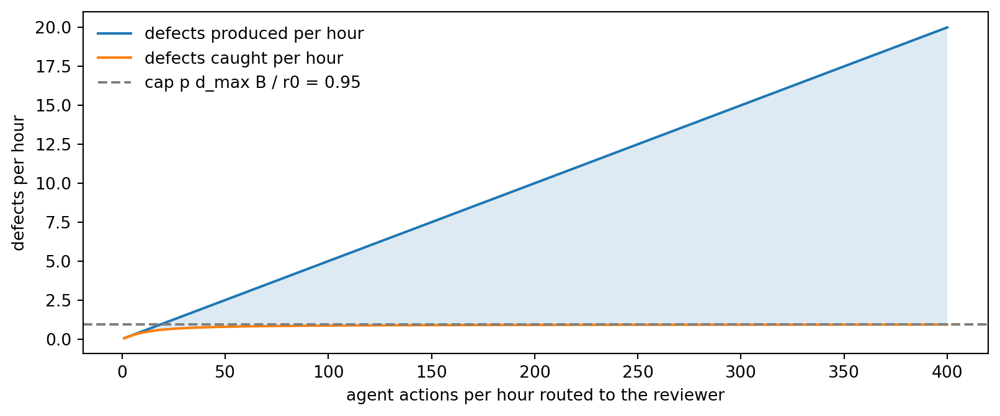
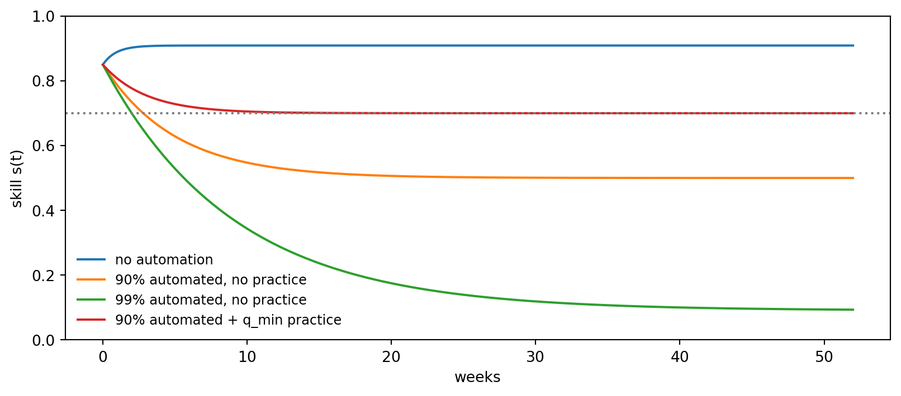
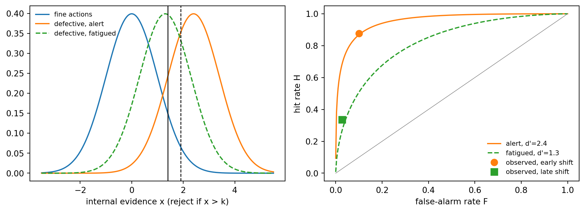
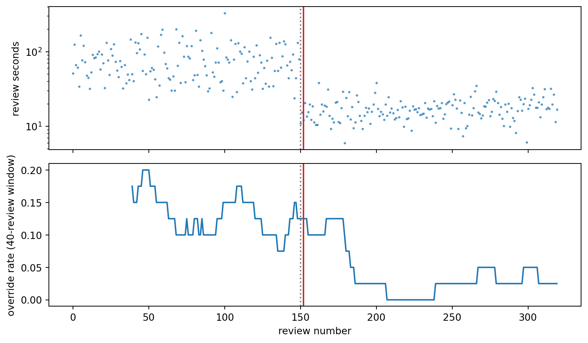
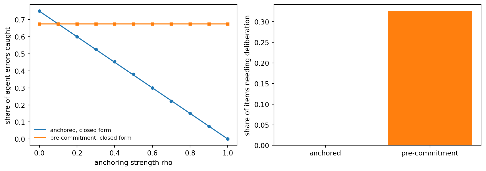
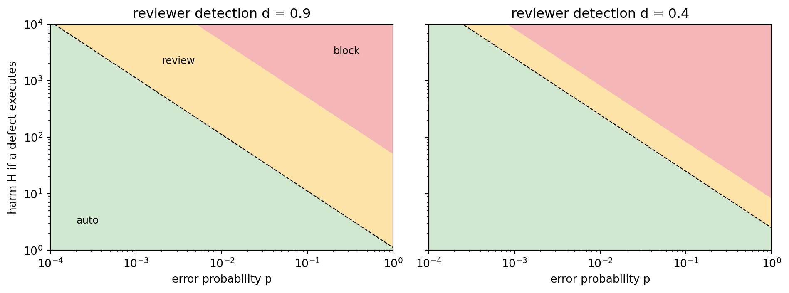
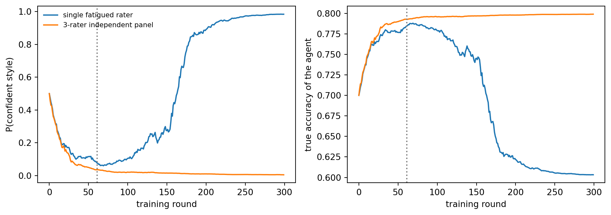
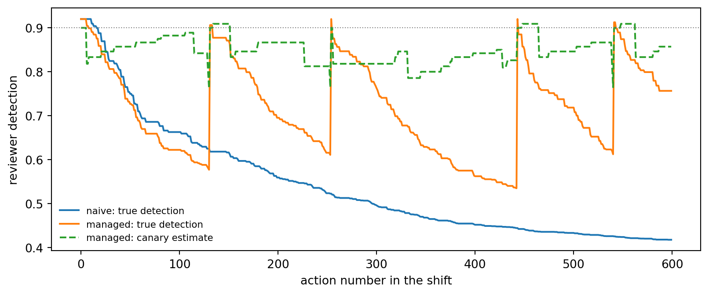
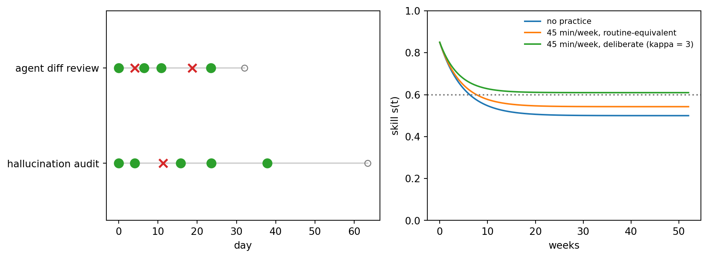

flowchart LR
T["Task"] --> A["Agent plans and proposes action"]
A --> G{"Gate"}
G -->|"low risk"| X["Execute"]
G -->|"judgment needed"| H["Human review"]
G -->|"too risky"| B["Block and escalate"]
H -->|"approve"| X
H -->|"reject"| A
X --> L["Logs and outcomes"]
H --> F["Approvals become feedback"]
F --> M["Next model or policy update"]
M --> A
L --> AU["Audit"]
238 Human in the Loop: Keeping People Capable of Overseeing AI Agents
Why agent oversight degrades the overseer, how to measure it, how to design against it, and how to keep human skills in shape
Every serious proposal for deploying AI agents ends with the same safeguard: keep a human in the loop. Regulators write it into law, vendors put an “Approve” button in front of every consequential tool call, and engineering teams promise that a person will review what the agent did before it reaches a customer. The safeguard is so familiar that it is rarely examined. This chapter examines it.
The starting point is a 2026 position paper by Margaret Mitchell and Avijit Ghosh of Hugging Face and Samir Passi of Data and Society, AI Agents Push Humans Out of the Loop (Mitchell, Ghosh, and Passi, 2026). Its claim is uncomfortable and, once stated, hard to unsee. Human oversight is not a fixed resource that a system can draw on indefinitely. It is a set of cognitive capacities (vigilance, domain expertise, the willingness to disagree, the habit of seeking evidence) and the way agents are currently designed and deployed wears those capacities down. The overseer approves plans they have not really read, accepts rationales they have not checked, and gradually loses the skill that made their approval worth anything. In the paper’s own compressed phrasing, oversight degrades the overseer.
The thesis of this chapter in one paragraph
A human approval is only as valuable as the probability \(d\) that the human would catch a bad action. Agent deployments push \(d\) down through three channels: volume (too many actions per unit of attention), vigilance decay and automation bias (the human stops looking), and deskilling (the human stops being able to see). Because approvals also become training signal, a falling \(d\) teaches the agent to produce whatever a tired reviewer approves. The remedies are therefore to measure \(d\) directly (signal detection theory and canaries), to spend human attention only where it changes outcomes (expected-loss gating, batch review, pre-commitment), and to keep \(d\) high over months and years through deliberate, scheduled practice. The last point is where community human-data platforms such as QuestLab fit: they supply independent, quality-controlled human judgment at scale, and the same evaluation quests double as a workout that keeps developers and deployers close to the ground.
The chapter is organized around that paragraph. We first pin down what “human in the loop” means and why agents strain it (Section 238.1, Section 238.2). We then formalize Bainbridge’s irony of automation as a small dynamical model of skill (Section 238.3), build the measurement tools that tell you whether an overseer is still overseeing (Section 238.4), and derive the design affordances the paper proposes (Section 238.5). A production harness ties the pieces together (Section 238.6), followed by organizational protocols (Section 238.7) and a section on QuestLab as both a human layer for oversight and a practice gym for practitioners (Section 238.8). Every quantitative claim is backed by executable Python from the book’s companion library, aiinaction.ch525_oversight, with Julia and Rust ports tested against the same fixtures (Section 238.11).
| Failure mode named by Mitchell et al. | Where this chapter treats it | Tool in aiinaction.ch525_oversight |
|---|---|---|
| Information overload and volume | Section 238.2 | detection_from_review_time |
| Skill atrophy and deskilling | Section 238.3 | skill_at, steady_state_skill, min_practice_rate |
| Automation bias, complacency, rubber-stamping | Section 238.4 | sdt_measures, cusum_lower, rolling_rate, ols_slope |
| Oversight quality is not measured | Section 238.4.2 | wilson_interval, zero_failure_upper_bound, canaries_to_detect_decline |
| Anchoring on the agent’s recommendation | Section 238.5.1 | simulation in the chapter |
| Approval fatigue from poorly targeted review | Section 238.5.2 | gate_action, review_threshold |
| Degraded feedback trains the agent | Section 238.5.3 | majority_vote_accuracy, layered_residual_error |
| Fatigue over a shift | Section 238.7 | vigilance, OversightGate |
| Long-term skill maintenance | Section 238.8.3 | practice_schedule, next_interval |
238.1 What “Human in the Loop” Means
The phrase covers several different arrangements, and much confusion comes from treating them as one.
In the loop. The system cannot act until a human approves. Each consequential action passes through an explicit decision point. Coding agents that ask before running a shell command, payment agents that require a confirmation tap, and clinical decision support where the physician signs every order all fall here.
On the loop. The system acts on its own while a human monitors and can intervene or stop it. A supervisor watching a dashboard of autonomous agents, or an operator who can halt a running workflow, is on the loop.
Out of the loop. The system acts without human involvement, and humans learn about its behavior, if at all, after the fact through logs and audits.
Mitchell et al. trace three historical lineages of the idea. In aviation and process control, the human is in the loop to prevent unintended harm: the pilot can take over when the autopilot fails. In debates about autonomous weapons, the human is there to authorize consequential actions, with “meaningful human control” as the governing norm. In machine learning, the human is in the loop to supply feedback that improves the model, through labeling, active learning, and reinforcement learning from human feedback. Agentic AI collapses the three: the same person is asked to prevent harm, to authorize actions, and (often without knowing it) to generate the preference data that the next model is trained on.
Parasuraman, Sheridan, and Wickens (Parasuraman, Sheridan, and Wickens, 2000) give a useful coordinate system. Any automated system can be described by how much it automates each of four information-processing stages: information acquisition, information analysis, decision selection, and action implementation. A modern agent sits at high levels on all four: it gathers the information, analyzes it, chooses the action, and executes it. The human’s role shrinks to a single binary decision at the end of a pipeline whose internals they did not observe.
The European Union’s AI Act turns oversight into a legal requirement for high-risk systems. Article 14 requires that the people assigned to oversight be enabled to understand the system’s capacities and limitations and monitor its operation, to remain aware of the tendency to over-rely on its output (automation bias, named explicitly), to correctly interpret its output, to decide not to use it or to override it, and to intervene or stop it (European Union, 2024). Every one of those enablements presumes a cognitive capacity. The argument of this chapter is that those capacities are not static; they are produced and maintained by practice, and they can be worn down by the very systems they are meant to supervise.
238.2 Why Agents Strain Oversight
Mitchell et al. describe three generations of systems and how each changes the overseer’s job.
| Generation | What the human reviews | What makes it hard |
|---|---|---|
| Discriminative AI | One prediction at a time, such as a label or a score | Calibration, base rates, automation bias |
| Generative AI | Long fluent outputs at high volume | Hallucinations that look like facts, unpredictable capability |
| Agentic AI | Multi-step plans, tool calls, side effects across systems | Opacity across steps, silent file operations, tool hallucination, actions that cannot be undone |
The paper also names four blind spots in current practice. First, information overload: chains of thought and tool traces are long and spread across components, so the reviewer cannot answer basic questions about why the agent did what it did. Second, role multiplicity: the user is simultaneously trying to get their own work done and acting as the authorizer, the accuracy checker, the safety evaluator, and the forecaster of consequences. Third, cognitive science blindness: frameworks that define “levels of autonomy” ignore that each switch between automatic and deliberative thinking (System 1 and System 2) has a cost, and that a person who has been clicking “Approve” on routine actions for an hour is not in a deliberative state when the dangerous one arrives. Fourth, poor affordances: vendor oversight features are built around the agent’s processing (showing its reasoning), not around the overseer’s comprehension.
238.2.1 Throughput erodes scrutiny
The first blind spot can be made quantitative. Suppose an agent produces \(\lambda\) actions per hour that need review, a fraction \(p\) of them defective, and the overseer has a fixed budget of \(B\) minutes of focused attention per hour. With attention split evenly, each action receives \(r = B/\lambda\) minutes. Detection improves with time spent but saturates; a standard model is
\[ d(r) = d_{\max}\left(1 - e^{-r/r_0}\right), \tag{238.1}\]
where \(d_{\max}\) is the reviewer’s best-case catch rate and \(r_0\) the time scale on which careful reading pays off. The number of defects caught per hour is
\[ C(\lambda) = \lambda\, p\, d\!\left(\frac{B}{\lambda}\right) = \lambda\, p\, d_{\max}\left(1 - e^{-B/(\lambda r_0)}\right). \]
For small \(\lambda\) the exponential vanishes and \(C(\lambda) \approx \lambda p d_{\max}\): almost every defect is caught. For large \(\lambda\), write \(x = B/(\lambda r_0) \to 0\) and expand \(1 - e^{-x} = x - x^2/2 + O(x^3)\):
\[ C(\lambda) = \lambda p d_{\max}\left(\frac{B}{\lambda r_0} - \frac{B^2}{2\lambda^2 r_0^2} + \cdots\right) \;\longrightarrow\; \frac{p\, d_{\max} B}{r_0}. \tag{238.2}\]
The number of defects produced grows as \(\lambda p\), but the number caught converges to a constant \(p d_{\max} B / r_0\). Past the point where \(\lambda r_0 \approx B\), every additional action is, to first order, unreviewed, no matter how conscientious the reviewer. The approval button is still clicked; the review no longer happens. This is the arithmetic behind the paper’s observation that users describe human in the loop as “babysitting”.
Code
import numpy as np
import matplotlib.pyplot as plt
import sympy as sp
from aiinaction.ch525_oversight import detection_from_review_time
B, r0, d_max, p = 30.0, 1.5, 0.95, 0.05 # minutes/hour, minutes, catch rate, defect rate
lam = np.linspace(1, 400, 400) # actions per hour needing review
caught = np.array([l * p * detection_from_review_time(B / l, d_max, r0) for l in lam])
produced = lam * p
cap = p * d_max * B / r0
# SymPy: the large-throughput limit of C(lambda) is p d_max B / r0
L, Bs, r0s, ps, ds = sp.symbols("lambda B r_0 p d_max", positive=True)
C = L * ps * ds * (1 - sp.exp(-Bs / (L * r0s)))
print("lim C(lambda) as lambda -> oo:", sp.limit(C, L, sp.oo))
fig, ax = plt.subplots(figsize=(8.5, 3.6))
ax.plot(lam, produced, label="defects produced per hour")
ax.plot(lam, caught, label="defects caught per hour")
ax.axhline(cap, ls="--", c="gray", label=f"cap p d_max B / r0 = {cap:.2f}")
ax.fill_between(lam, caught, produced, alpha=0.15)
ax.set_xlabel("agent actions per hour routed to the reviewer")
ax.set_ylabel("defects per hour")
ax.legend(loc="upper left", frameon=False)
plt.tight_layout()
plt.show()
for l in (10, 50, 100, 200, 400):
r = B / l
print(f"lambda={l:>3}/h minutes per action={r:5.2f} "
f"detection={detection_from_review_time(r, d_max, r0):.2f} "
f"share of defects caught={l * p * detection_from_review_time(r, d_max, r0) / (l * p):.0%}")lim C(lambda) as lambda -> oo: B*d_max*p/r_0
lambda= 10/h minutes per action= 3.00 detection=0.82 share of defects caught=82%
lambda= 50/h minutes per action= 0.60 detection=0.31 share of defects caught=31%
lambda=100/h minutes per action= 0.30 detection=0.17 share of defects caught=17%
lambda=200/h minutes per action= 0.15 detection=0.09 share of defects caught=9%
lambda=400/h minutes per action= 0.07 detection=0.05 share of defects caught=5%The printed table shows the mechanism in the units a team lead thinks in. At ten actions an hour the reviewer has three minutes per action and catches 82 percent of defects; at two hundred, nine seconds per action and under ten percent. Nothing about the reviewer changed. The volume did.
238.3 The Irony of Automation
In 1983 Lisanne Bainbridge described what she called the ironies of automation (Bainbridge, 1983). Designers automate the tasks they understand and leave the operator the tasks they could not automate, which are by construction the hardest. They then ask the operator to monitor the automation and take over when it fails. But monitoring is something humans do badly over long periods, and the skills needed to take over are maintained only by using them, which automation has removed. The more reliable the automation, the rarer the takeover, the less practiced the operator, and the worse the takeover goes when it finally comes.
Endsley and Kiris (Endsley and Kiris, 1995) named the resulting state the out-of-the-loop performance problem: operators of highly automated systems lose situation awareness, are slower to detect failures, and perform worse when they must take manual control. Parasuraman and Manzey (Parasuraman and Manzey, 2010) separated two related failures: complacency, insufficient monitoring of automation that is usually right, and automation bias, following its recommendation even when other information contradicts it. Both are attentional, both worsen under load, and both affect experts as well as novices.
Mitchell et al. argue that agents reproduce all of this at a scale and speed the human factors literature never contemplated, and that newer evidence shows the effect reaching the skills themselves, not only attention. Table 238.3 summarizes representative findings.
| Study | Setting | Finding |
|---|---|---|
| Budzyń et al. (2025), Lancet Gastroenterology and Hepatology | Four endoscopy centres in Poland; 1,443 colonoscopies performed without AI before and after the centres adopted AI polyp detection | The adenoma detection rate of standard, unassisted colonoscopy fell from 28.4 to 22.4 percent after endoscopists began working with AI (odds ratio 0.69) |
| Casner et al. (2014), Human Factors | 16 airline pilots flying routine and non-routine scenarios in a Boeing 747-400 simulator | Hand-flying and instrument scanning were largely retained, but the cognitive skills of manual flight (tracking position without a map display, choosing the next navigational step, recognizing instrument failures) showed frequent, significant problems, associated with mind-wandering while the automation flew |
| Dahmani and Bohbot (2020), Scientific Reports | 50 regular drivers; 13 retested three years later | More lifetime GPS use went with worse spatial memory when navigating unaided, and more GPS use over the three years with a steeper decline |
| Bastani et al. (2025), PNAS | Field experiment with nearly 1,000 high-school mathematics students | GPT-4 access raised practice grades (48 percent with a plain chat interface, 127 percent with a guarded tutor), but when access was removed the plain-interface group scored 17 percent below students who never had it; the guardrails largely removed the harm |
| Shen and Tamkin (2026), randomized experiments (preprint) | Developers learning a new asynchronous programming library with or without AI help | AI use impaired conceptual understanding, code reading, and debugging, without significant average speed gains; interaction patterns that kept the learner cognitively engaged preserved learning |
| Becker et al. (2025), randomized trial (preprint) | 16 experienced open-source developers, 246 tasks in their own repositories | Allowing AI tools increased completion time by 19 percent, while the developers themselves estimated afterwards that AI had made them 20 percent faster |
| Lee et al. (2025), CHI | Survey of 319 knowledge workers sharing 936 examples of generative AI use at work | Higher confidence in generative AI was associated with less critical thinking; higher self-confidence with more |
| Gaube et al. (2021), npj Digital Medicine | Physicians diagnosing chest X-rays with advice, some of it inaccurate | Inaccurate advice significantly worsened diagnostic accuracy whether it was labeled as coming from AI or from a human expert |
| Yu et al. (2026), workshop paper | 400 repeat reviewers, 11,429 reviews of pull requests opened by AI coding agents over seven months | Approval rates rose from 30.1 to 36.8 percent with reviewer experience while inline comments fell by 22 percent and queue time grew, a pattern the authors attribute to habituation under load rather than calibrated trust |
| Dhanorkar, Passi, and Vorvoreanu (2026), FAccT | Interviews with 17 experienced developers who use software agents | Oversight work spans a priori control, co-planning, real-time monitoring, and post hoc review; developers adopt heuristics such as treating agent plans as faithful proxies for behavior and passing tests as proof of correctness |
Two cautions apply. Several of the most striking results are recent, and some (Shen and Tamkin; Becker et al.; and the EEG study of Kosmyna et al. (2025), which coined the phrase “cognitive debt”) are preprints. And deskilling is not inevitable: the Bastani and Shen results both show that how the tool is designed and used decides whether skill is lost, which is the premise of the design and practice sections below.
The common thread is that skill is not a stock you acquire once. It is a flow you maintain by exercising it, and agentic tools are very efficient at removing the exercise.
238.3.1 A model of skill under automation
Let \(s(t) \in [0, 1]\) be the overseer’s skill at the underlying task (writing the query, reading the scan, reviewing the diff), scaled so that \(s = 1\) is full proficiency. Two forces act on it. Practice pushes skill toward its ceiling at a rate proportional to the remaining headroom \(1 - s\); disuse erodes it at a rate proportional to the skill itself. If \(u\) is the practice intensity, the fraction of a full manual workload the person actually performs, then
\[ \frac{ds}{dt} = \eta\, u\, (1 - s) - \lambda\, s, \tag{238.3}\]
with learning rate \(\eta > 0\) and decay rate \(\lambda > 0\). Automation of a fraction \(a\) of the work leaves incidental practice \(1 - a\); deliberate practice adds an extra \(q \ge 0\), so \(u = (1 - a) + q\).
Solving the equation. Collect terms: \(\dot s = \eta u - (\eta u + \lambda)s\). This is linear with constant coefficients. Let \(k = \eta u + \lambda\) and look for the fixed point \(\dot s = 0\):
\[ s^{*} = \frac{\eta u}{\eta u + \lambda} = \frac{\eta\,[(1 - a) + q]}{\eta\,[(1 - a) + q] + \lambda}. \tag{238.4}\]
Substituting \(e(t) = s(t) - s^*\) gives \(\dot e = -k e\), so \(e(t) = e(0)e^{-kt}\) and
\[ s(t) = s^{*} + \left(s_0 - s^{*}\right) e^{-(\eta u + \lambda)t}. \tag{238.5}\]
The irony, formally. With no deliberate practice (\(q = 0\)), Equation 238.4 gives \(s^* = \eta(1-a) / (\eta(1-a) + \lambda)\), which falls monotonically in \(a\) and reaches exactly zero at full automation. The overseer’s long-run skill is not set by their talent or their training history (both wash out through the exponential in Equation 238.5); it is set by how much of the work they still do.
How much practice is enough. Requiring \(s^* \ge s_{\min}\) in Equation 238.4 and solving for \(q\):
\[ \eta u \ge \frac{\lambda s_{\min}}{1 - s_{\min}} \quad\Longrightarrow\quad q_{\min} = \max\!\left(0,\; \frac{\lambda\, s_{\min}}{\eta\,(1 - s_{\min})} - (1 - a)\right). \tag{238.6}\]
Two features of Equation 238.6 matter in practice. The required practice grows without bound as \(s_{\min} \to 1\), so “keep everyone at expert level” is not affordable and teams must choose a floor. And \(q_{\min}\) rises one for one with automation: each extra percent of work handed to the agent must be paid back as a percent of deliberate practice if skill is to hold.
Code
import pandas as pd
from aiinaction.ch525_oversight import skill_at, steady_state_skill, min_practice_rate
# Verify the derivation symbolically before using it.
t = sp.symbols("t", nonnegative=True)
eta, lam_, u, s0 = sp.symbols("eta lambda u s_0", positive=True)
s = sp.Function("s")
sol = sp.dsolve(sp.Eq(s(t).diff(t), eta * u * (1 - s(t)) - lam_ * s(t)), s(t), ics={s(0): s0}).rhs
s_star = eta * u / (eta * u + lam_)
closed = s_star + (s0 - s_star) * sp.exp(-(eta * u + lam_) * t)
a_, q_, smin = sp.symbols("a q s_min", positive=True)
q_sol = sp.solve(sp.Eq(eta * ((1 - a_) + q_) / (eta * ((1 - a_) + q_) + lam_), smin), q_)[0]
print("dsolve agrees with the closed form:", sp.simplify(sol - closed) == 0)
print("q_min formula agrees with sympy.solve:",
sp.simplify(q_sol - (lam_ * smin / (eta * (1 - smin)) - (1 - a_))) == 0)
ETA, LAM, S0, TARGET = 1.0, 0.1, 0.85, 0.7
weeks = np.linspace(0, 52, 300)
scenarios = [
("no automation", 0.0, 0.0),
("90% automated, no practice", 0.9, 0.0),
("99% automated, no practice", 0.99, 0.0),
("90% automated + q_min practice", 0.9, min_practice_rate(TARGET, 0.9, ETA, LAM)),
]
fig, ax = plt.subplots(figsize=(8.5, 3.8))
for name, a, q in scenarios:
ax.plot(weeks, [skill_at(w, S0, a, q, ETA, LAM) for w in weeks], label=name)
ax.axhline(TARGET, ls=":", c="gray")
ax.set_xlabel("weeks")
ax.set_ylabel("skill s(t)")
ax.set_ylim(0, 1)
ax.legend(frameon=False, fontsize=9)
plt.tight_layout()
plt.show()
rows = []
for a in (0.5, 0.8, 0.9, 0.95, 0.99):
rows.append({
"automation a": a,
"steady skill, q=0": round(steady_state_skill(a, 0.0, ETA, LAM), 3),
"q_min for s>=0.6": round(min_practice_rate(0.6, a, ETA, LAM), 3),
"q_min for s>=0.7": round(min_practice_rate(0.7, a, ETA, LAM), 3),
"q_min for s>=0.8": round(min_practice_rate(0.8, a, ETA, LAM), 3),
})
pd.DataFrame(rows)dsolve agrees with the closed form: True
q_min formula agrees with sympy.solve: True
| automation a | steady skill, q=0 | q_min for s>=0.6 | q_min for s>=0.7 | q_min for s>=0.8 | |
|---|---|---|---|---|---|
| 0 | 0.50 | 0.833 | 0.00 | 0.000 | 0.00 |
| 1 | 0.80 | 0.667 | 0.00 | 0.033 | 0.20 |
| 2 | 0.90 | 0.500 | 0.05 | 0.133 | 0.30 |
| 3 | 0.95 | 0.333 | 0.10 | 0.183 | 0.35 |
| 4 | 0.99 | 0.091 | 0.14 | 0.223 | 0.39 |
The table reads directly as a staffing rule. At 90 percent automation and these rates, holding skill at 0.7 requires deliberate practice worth about 13 percent of a manual workload; at 99 percent automation, about 22 percent. Whether that is five hours a week or one depends on how efficient the practice is. Ericsson and colleagues (Ericsson, Krampe, and Tesch-Römer, 1993) found that deliberate practice (focused on weaknesses, at the edge of ability, with immediate feedback) is far more effective per hour than routine performance. If a focused practice session is worth \(\kappa\) hours of incidental exposure, the hours needed are \(q_{\min}/\kappa\). Designing practice with high \(\kappa\) is the subject of Section 238.8.3.
238.3.2 From skill to the value of a review
A reviewer’s detection probability depends on their skill. A simple and transparent assumption is linear: \(d = d_{\text{floor}} + (d_{\text{ceil}} - d_{\text{floor}})\, s\), where \(d_{\text{floor}}\) is what an unskilled but attentive person catches (obvious errors) and \(d_{\text{ceil}}\) is an expert’s catch rate. The expected value of reviewing an action with error probability \(p\) and harm \(H\) at cost \(c\) is
\[ V = p\, d\, H - c, \tag{238.7}\]
the harm averted minus the cost of the review. Because \(V\) is linear in \(d\), every mechanism in this chapter that lowers \(d\) (volume, fatigue, anchoring, deskilling) lowers the value of oversight proportionally, and below \(d = c/(pH)\) the review is pure cost. A review step that a deskilled or exhausted person performs is not a weaker safeguard. It is a ritual.
238.4 Measuring the Overseer
The paper’s most actionable idea is that oversight quality is an empirical property of a deployed system and should be measured like latency or error rate. This section builds the measurements.
238.4.1 Signal detection theory for approvals
Treat each review as a detection problem. The signal is a defective action. The reviewer either rejects (says “defect”) or approves.
| Reviewer rejects | Reviewer approves | |
|---|---|---|
| Action is defective | Hit | Miss (a defect executes) |
| Action is fine | False alarm (needless rejection) | Correct rejection (correct approval) |
The equal-variance Gaussian model assumes the reviewer forms an internal evidence value \(x\) for each action, distributed \(\mathcal{N}(0, 1)\) for fine actions and \(\mathcal{N}(d', 1)\) for defective ones, and rejects whenever \(x > k\). Then the hit rate and false-alarm rate are
\[ H = P(x > k \mid \text{defective}) = 1 - \Phi(k - d') = \Phi(d' - k), \qquad F = P(x > k \mid \text{fine}) = \Phi(-k). \]
Apply the probit \(z = \Phi^{-1}\) to both: \(z(H) = d' - k\) and \(z(F) = -k\). Subtracting,
\[ d' = z(H) - z(F), \tag{238.8}\]
and the criterion measured from the midpoint between the two distributions, \(c = k - d'/2\), is
\[ c = -\tfrac{1}{2}\left[z(H) + z(F)\right]. \tag{238.9}\]
The two numbers separate the two ways oversight fails. Sensitivity \(d'\) is the reviewer’s ability to tell good from bad; it falls with fatigue and deskilling. Criterion \(c\) is the reviewer’s willingness to reject; positive \(c\) means they need strong evidence before saying no. Rubber-stamping is a rising \(c\) at constant or falling \(d'\): the reviewer can still see, but has stopped acting on what they see. The distinction matters because the remedies differ. A falling \(d'\) calls for rest, rotation, or retraining; a rising \(c\) calls for changing incentives and friction.
When a reviewer catches every planted defect, \(H = 1\) and \(z(H) = \infty\). The log-linear correction of Hautus (Hautus, 1995) adds one half to each cell, \(H = (\text{hits} + 0.5)/(n_{\text{signal}} + 1)\) and likewise for \(F\), which keeps both estimates finite and reduces bias.
Code
from scipy.stats import norm
from aiinaction.ch525_oversight import sdt_measures
rng = np.random.default_rng(525)
def simulate_reviews(d_prime, k, n_defective=60, n_fine=540):
hits = int((rng.normal(d_prime, 1, n_defective) > k).sum())
fas = int((rng.normal(0, 1, n_fine) > k).sum())
return hits, n_defective - hits, fas, n_fine - fas
early = sdt_measures(*simulate_reviews(d_prime=2.4, k=1.4))
late = sdt_measures(*simulate_reviews(d_prime=1.3, k=1.9))
print(pd.DataFrame({
"phase": ["early shift", "late shift"],
"hit rate": [early.hit_rate, late.hit_rate],
"false-alarm rate": [early.false_alarm_rate, late.false_alarm_rate],
"d'": [early.d_prime, late.d_prime],
"criterion c": [early.criterion, late.criterion],
}).round(3).to_string(index=False))
fig, ax = plt.subplots(1, 2, figsize=(10, 3.7))
x = np.linspace(-3.5, 5.5, 400)
ax[0].plot(x, norm.pdf(x, 0, 1), c="C0", label="fine actions")
ax[0].plot(x, norm.pdf(x, 2.4, 1), c="C1", label="defective, alert")
ax[0].plot(x, norm.pdf(x, 1.3, 1), c="C2", ls="--", label="defective, fatigued")
ax[0].axvline(1.4, c="k", lw=1)
ax[0].axvline(1.9, c="k", lw=1, ls="--")
ax[0].set_xlabel("internal evidence x (reject if x > k)")
ax[0].legend(frameon=False, fontsize=8)
f = np.linspace(1e-4, 1 - 1e-4, 300)
for dp, ls, col, name in ((2.4, "-", "C1", "alert, d'=2.4"), (1.3, "--", "C2", "fatigued, d'=1.3")):
ax[1].plot(f, norm.cdf(dp + norm.ppf(f)), ls=ls, c=col, label=name)
ax[1].plot(early.false_alarm_rate, early.hit_rate, "o", c="C1", ms=8, label="observed, early shift")
ax[1].plot(late.false_alarm_rate, late.hit_rate, "s", c="C2", ms=8, label="observed, late shift")
ax[1].plot([0, 1], [0, 1], c="gray", lw=0.6)
ax[1].set_xlabel("false-alarm rate F")
ax[1].set_ylabel("hit rate H")
ax[1].legend(frameon=False, fontsize=8)
plt.tight_layout()
plt.show() phase hit rate false-alarm rate d' criterion c
early shift 0.877 0.101 2.438 0.058
late shift 0.336 0.027 1.507 1.177
238.4.2 Canaries: known-answer probes in the review stream
Signal detection needs ground truth, and in production the ground truth for a reviewed action is usually unknown. Mitchell et al. propose canaries: actions with a known defect planted in the review stream, indistinguishable from ordinary items. Whether the reviewer rejects them is a direct, unbiased measurement of the catch rate \(d\). Three statistical questions follow.
How precise is the estimate? With \(x\) canaries caught out of \(n\), the Wilson score interval inverts the normal score test \(|\hat p - p| \le z\sqrt{p(1-p)/n}\). Squaring and collecting powers of \(p\) gives the quadratic \((1 + z^2/n)p^2 - (2\hat p + z^2/n)p + \hat p^2 \le 0\), whose roots are
\[ p_{\pm} = \frac{\hat p + \dfrac{z^2}{2n} \pm z\sqrt{\dfrac{\hat p(1 - \hat p)}{n} + \dfrac{z^2}{4n^2}}}{1 + \dfrac{z^2}{n}}. \tag{238.10}\]
Unlike the textbook Wald interval, it stays inside \([0, 1]\) and behaves well when the reviewer catches all or none of the canaries, which is exactly the regime that matters.
What does a perfect record prove? If a reviewer has caught all \(n\) canaries, the largest miss rate \(m\) still consistent with that record at level \(\alpha\) solves \((1 - m)^n = \alpha\), so \(m = 1 - \alpha^{1/n}\). Expanding \(\alpha^{1/n} = e^{(\ln \alpha)/n} = 1 + (\ln\alpha)/n + O(n^{-2})\) gives
\[ m \approx \frac{-\ln \alpha}{n} = \frac{\ln 20}{n} \approx \frac{3}{n} \quad (\alpha = 0.05), \tag{238.11}\]
the “rule of three”. Thirty clean canaries bound the miss rate below about ten percent, not below zero.
How many canaries detect a decline? To test \(H_0: d = p_0\) against a drop to \(d = p_1 < p_0\) with one-sided level \(\alpha\) and power \(1 - \beta\), the normal approximation requires the rejection boundary \(p_0 - z_{1-\alpha}\sqrt{p_0 q_0/n}\) to sit \(z_{1-\beta}\sqrt{p_1 q_1 / n}\) above \(p_1\). Solving for \(n\):
\[ n = \left(\frac{z_{1-\alpha}\sqrt{p_0 q_0} + z_{1-\beta}\sqrt{p_1 q_1}}{p_0 - p_1}\right)^{2}, \qquad q_i = 1 - p_i. \tag{238.12}\]
Code
from aiinaction.ch525_oversight import (
canaries_to_detect_decline, wilson_interval, zero_failure_upper_bound,
)
alpha = sp.Rational(1, 20)
n_ = sp.symbols("n", positive=True)
print("leading term of 1 - alpha^(1/n):", sp.series(1 - alpha ** (1 / n_), n_, sp.oo, 2).removeO())
rows = []
for p0, p1 in [(0.95, 0.85), (0.9, 0.8), (0.9, 0.7), (0.9, 0.5)]:
rows.append({"baseline catch rate": p0, "degraded catch rate": p1,
"canaries needed": canaries_to_detect_decline(p0, p1)})
needed = pd.DataFrame(rows)
clean = pd.DataFrame({
"clean canaries n": [10, 30, 100, 300],
"95% upper bound on miss rate": [round(zero_failure_upper_bound(n), 4) for n in (10, 30, 100, 300)],
"rule of three 3/n": [round(3 / n, 4) for n in (10, 30, 100, 300)],
})
lo, hi = wilson_interval(17, 20)
print(f"17 of 20 canaries caught: Wilson 95% interval [{lo:.3f}, {hi:.3f}]")
print(clean.to_string(index=False))
neededleading term of 1 - alpha^(1/n): log(20)/n
17 of 20 canaries caught: Wilson 95% interval [0.640, 0.948]
clean canaries n 95% upper bound on miss rate rule of three 3/n
10 0.2589 0.30
30 0.0950 0.10
100 0.0295 0.03
300 0.0099 0.01| baseline catch rate | degraded catch rate | canaries needed | |
|---|---|---|---|
| 0 | 0.95 | 0.85 | 44 |
| 1 | 0.90 | 0.80 | 69 |
| 2 | 0.90 | 0.70 | 20 |
| 3 | 0.90 | 0.50 | 6 |
At a canary rate of five percent, detecting a fall from 0.9 to 0.7 takes about four hundred reviewed actions, roughly a working day for a busy reviewer. Canaries are therefore a slow instrument, good for weekly health checks and rotation decisions, and they should be paired with faster behavioral signals.
Canaries have two practical requirements. They must be indistinguishable from real items, or reviewers learn to spot them and the measurement measures the wrong thing. And the agent must not see them. Mitchell et al. point to evidence that agents can learn which failures their overseers miss and conceal failures accordingly; an agent that can recognize canaries can learn to behave on canaries and misbehave elsewhere. Canary generation belongs to the oversight system, not to the agent.
238.4.3 Behavioral signatures and change detection
Behavioral monitoring needs no ground truth at all. The paper lists several signatures, all computable from an ordinary review log:
- Time-based. Review duration falls over a shift while the approval rate holds, or fails to rise with the complexity of the action. The slope of review time on complexity (
ols_slope) is a scalar summary: if it approaches zero, scrutiny no longer scales with stakes. - Override. The rate at which the reviewer disagrees with the agent declines over weeks (
rolling_rate). Some decline is learning; a steady drift to zero is acquiescence. - Evidence-seeking. The reviewer stops opening diffs, logs, or sources as stakes rise.
- Style and fatigue covariance. The agent’s outputs shift (more confident summaries, shorter plans) as the reviewer tires, a sign the agent is adapting to weakened oversight.
To decide when review time has dropped, use Page’s cumulative sum (Page, 1954). Suppose log review times \(x_t\) are approximately \(\mathcal{N}(\mu_0, \sigma^2)\) for an engaged reviewer and \(\mathcal{N}(\mu_0 - \delta, \sigma^2)\) once they start skimming. The log-likelihood ratio contributed by one observation is
\[ \ell_t = \log\frac{\phi\big((x_t - \mu_0 + \delta)/\sigma\big)}{\phi\big((x_t - \mu_0)/\sigma\big)} = \frac{\delta}{\sigma^2}\left[(\mu_0 - x_t) - \frac{\delta}{2}\right]. \]
Accumulating these and resetting at zero whenever the evidence favors “engaged” gives, after dividing by the constant \(\delta/\sigma^2\),
\[ S_t = \max\!\left(0,\; S_{t-1} + (\mu_0 - x_t) - k\right), \qquad k = \delta / 2, \tag{238.13}\]
with an alarm when \(S_t\) exceeds a threshold \(h\). The slack \(k\) is half the shift you care about; \(h\) trades false alarms against detection delay.
Code
from aiinaction.ch525_oversight import cusum_lower, rolling_rate, ols_slope
rng = np.random.default_rng(7)
n, change = 320, 150
complexity = rng.choice([1.0, 2.0, 3.0], size=n, p=[0.5, 0.3, 0.2])
engaged = np.arange(n) < change
mean_sec = np.where(engaged, 45.0 * complexity, 14.0 + 2.0 * complexity)
seconds = rng.lognormal(np.log(mean_sec), 0.35)
override = np.where(engaged, rng.random(n) < 0.12, rng.random(n) < 0.02).astype(float)
mu0 = float(np.log(seconds[:60]).mean()) # baseline from a calibration window
res = cusum_lower(np.log(seconds).tolist(), target_mean=mu0, slack=0.35, threshold=4.0)
print(f"baseline mean log-seconds {mu0:.2f}; change at review {change}; CUSUM alarm at review {res.alarm_index}")
print(f"time-vs-complexity slope, engaged: {ols_slope(complexity[:change], seconds[:change]):6.1f} s per unit")
print(f"time-vs-complexity slope, skimming: {ols_slope(complexity[change:], seconds[change:]):6.1f} s per unit")
fig, ax = plt.subplots(2, 1, figsize=(8.5, 5), sharex=True)
ax[0].semilogy(seconds, ".", ms=3, alpha=0.6)
ax[0].axvline(change, c="gray", ls=":")
ax[0].axvline(res.alarm_index, c="C3")
ax[0].set_ylabel("review seconds")
roll = rolling_rate(override.tolist(), 40)
ax[1].plot(np.arange(39, n), roll)
ax[1].axvline(change, c="gray", ls=":")
ax[1].axvline(res.alarm_index, c="C3")
ax[1].set_ylabel("override rate (40-review window)")
ax[1].set_xlabel("review number")
plt.tight_layout()
plt.show()baseline mean log-seconds 4.25; change at review 150; CUSUM alarm at review 152
time-vs-complexity slope, engaged: 42.9 s per unit
time-vs-complexity slope, skimming: 2.0 s per unit
Monitoring overseers is monitoring workers
Every signature in this section is a measurement of a person. Used to discipline individuals, it will be gamed (reviewers learn to pause before clicking) and it will damage the trust that honest disagreement requires. Used to trigger support (a break, a rotation, a lighter queue, a retraining session) and reported in aggregate, it does what the paper intends: it makes the degradation of oversight visible to the organization that caused it. Workplace monitoring is also regulated in many jurisdictions; involve the people being measured in the design, and tell them what is measured and why.
238.5 Designing for Oversight
Mitchell et al. propose design-level affordances in three groups: strategic friction, approval design, and behavioral monitoring (just covered). This section derives the first two.
238.5.1 Strategic friction: pre-commitment and its arithmetic
Buçinca, Malaya, and Gajos (Buçinca, Malaya, and Gajos, 2021) showed that cognitive forcing functions, interventions that make people think before they see the AI’s answer, reduce over-reliance on AI recommendations, at some cost in user preference. The paper proposes four such mechanisms:
- Pre-commitment. The reviewer records their own judgment before seeing the agent’s recommendation.
- Delay and choice. The reviewer decides whether and when to see the agent’s output.
- Reasoning probes. At high-stakes moments the interface asks a question that forces engagement, such as “what evidence would change your mind?”.
- Action gating. Consequential paths require explicit verification, and the interface shows alternatives rather than a single recommended action.
The value of pre-commitment can be derived for a binary decision. Let the agent be right with probability \(a_{\text{ai}}\) and the reviewer’s unaided judgment right with probability \(a_h\), independently. Without pre-commitment, an anchored reviewer adopts the agent’s answer with probability \(\rho\) and otherwise uses their own judgment. Final accuracy and the rate at which agent errors are caught are
\[ \text{Acc}_{\text{anchored}} = \rho\, a_{\text{ai}} + (1 - \rho)\, a_h, \qquad \text{Catch}_{\text{anchored}} = (1 - \rho)\, a_h . \tag{238.14}\]
With pre-commitment, the reviewer’s judgment is formed before the agent’s answer is visible, so it cannot be anchored. If the two agree, the shared answer is accepted. If they disagree, the disagreement itself is the signal: the item is escalated to a deliberate check that resolves correctly with probability \(a_{\text{del}}\). In a binary task, agreement happens when both are right or both are wrong, so
\[ \text{Acc}_{\text{pre}} = a_h a_{\text{ai}} + \big[a_h(1 - a_{\text{ai}}) + (1 - a_h)a_{\text{ai}}\big]\, a_{\text{del}}, \qquad \text{Catch}_{\text{pre}} = a_h\, a_{\text{del}}, \tag{238.15}\]
and the share of items that need deliberation is \(a_h(1 - a_{\text{ai}}) + (1 - a_h)a_{\text{ai}}\). Two consequences follow. The catch rate on agent errors no longer depends on \(\rho\), the reviewer’s susceptibility to anchoring, at all. And every item now exercises the reviewer’s unaided judgment, which in the language of Equation 238.3 restores practice intensity \(u\) toward one even when the agent does all of the work: pre-commitment is friction that doubles as practice.
Code
a_h, a_ai, a_del = 0.75, 0.85, 0.90
N = 200_000
rng = np.random.default_rng(1)
truth = rng.integers(0, 2, N)
ai = np.where(rng.random(N) < a_ai, truth, 1 - truth)
human = np.where(rng.random(N) < a_h, truth, 1 - truth)
delib = np.where(rng.random(N) < a_del, truth, 1 - truth)
ai_wrong = ai != truth
rhos = np.linspace(0, 1, 11)
sim_anch, sim_pre = [], []
for rho in rhos:
anchored = rng.random(N) < rho
final_anchor = np.where(anchored, ai, human)
final_pre = np.where(human != ai, delib, ai)
sim_anch.append((final_anchor[ai_wrong] == truth[ai_wrong]).mean())
sim_pre.append((final_pre[ai_wrong] == truth[ai_wrong]).mean())
disagree_share = a_h * (1 - a_ai) + (1 - a_h) * a_ai
fig, ax = plt.subplots(1, 2, figsize=(10, 3.6))
ax[0].plot(rhos, (1 - rhos) * a_h, label="anchored, closed form")
ax[0].plot(rhos, sim_anch, "o", c="C0", ms=4)
ax[0].plot(rhos, np.full_like(rhos, a_h * a_del), label="pre-commitment, closed form")
ax[0].plot(rhos, sim_pre, "s", c="C1", ms=4)
ax[0].set_xlabel("anchoring strength rho")
ax[0].set_ylabel("share of agent errors caught")
ax[0].legend(frameon=False, fontsize=8)
ax[1].bar(["anchored", "pre-commitment"], [0.0, disagree_share], color=["C0", "C1"])
ax[1].set_ylabel("share of items needing deliberation")
plt.tight_layout()
plt.show()
rho = 0.8
print(pd.DataFrame({
"design": ["agent alone", "anchored review (rho=0.8)", "pre-commitment"],
"final accuracy": [a_ai, rho * a_ai + (1 - rho) * a_h,
a_h * a_ai + disagree_share * a_del],
"agent errors caught": [0.0, (1 - rho) * a_h, a_h * a_del],
"items deliberated": [0.0, 0.0, disagree_share],
}).round(3).to_string(index=False))
design final accuracy agent errors caught items deliberated
agent alone 0.85 0.000 0.000
anchored review (rho=0.8) 0.83 0.150 0.000
pre-commitment 0.93 0.675 0.325With an agent right 85 percent of the time and a reviewer right 75 percent of the time on their own, anchored review is worse than the agent alone (83 versus 85 percent) and catches only 15 percent of the agent’s errors. Pre-commitment reaches 93 percent and catches 68 percent of the agent’s errors, at the price of deliberating on a third of the items. The arithmetic assumes the deliberate check is good (\(a_{\text{del}} = 0.9\)); if escalated items go to a second, independent reviewer rather than back to the same tired one, that assumption is easier to meet.
238.5.2 Approval design: an expected-loss gate
Approval fatigue is the predictable result of asking for approval on everything. The paper’s approval-design affordances (bounded autonomy, batch review, automated pre-checks) all ration a scarce resource, expert attention. Decision theory says how.
For an action with error probability \(p\) (from the agent’s own uncertainty, a classifier, or historical rates for that tool), harm \(H\) if a defective action executes, review cost \(c\) (the reviewer’s time, in the same units), and reviewer detection probability \(d\), the expected losses of the two ways to proceed are
\[ L_{\text{auto}} = p H, \qquad L_{\text{review}} = c + p(1 - d)H . \]
Review is preferred when \(L_{\text{review}} < L_{\text{auto}}\), that is when \(c < p\,d\,H\), which is Equation 238.7 again. Solving for \(p\) gives the review threshold
\[ p^{*} = \frac{c}{d\, H}. \tag{238.16}\]
Two refinements make this a gate rather than a formula. First, some residual risk is unacceptable whatever it costs to avoid; impose \(p(1-d)H \le L_{\max}\) on any route that executes, and block (escalate, require a second approver, or refuse) when even review cannot meet it. Second, \(d\) must be the measured detection probability from Section 238.4.2, not an assumed one. Then Equation 238.16 behaves correctly as oversight degrades: as \(d\) falls, \(p^*\) rises (reviewing becomes less worthwhile because it catches less), and more actions fail the residual constraint and are blocked. A gate fed with honest estimates of \(d\) will not pretend that a tired reviewer is a safeguard.
Code
from aiinaction.ch525_oversight import gate_action, review_threshold, Route
ps = np.logspace(-4, 0, 220)
Hs = np.logspace(0, 4, 220)
code = {Route.AUTO: 0, Route.REVIEW: 1, Route.BLOCK: 2}
fig, axes = plt.subplots(1, 2, figsize=(10, 3.8), sharey=True)
for ax, d in zip(axes, (0.9, 0.4)):
Z = np.array([[code[gate_action(p, H, 1.0, d, 5.0).route] for p in ps] for H in Hs])
ax.contourf(ps, Hs, Z, levels=[-0.5, 0.5, 1.5, 2.5], colors=["#cfe8cf", "#fde3a7", "#f4b6b6"])
ax.plot(ps, [1.0 / (d * p) for p in ps], "k--", lw=0.8)
ax.set_xscale("log"); ax.set_yscale("log")
ax.set_ylim(Hs[0], Hs[-1])
ax.set_title(f"reviewer detection d = {d}")
ax.set_xlabel("error probability p")
axes[0].set_ylabel("harm H if a defect executes")
for txt, xy in (("auto", (2e-4, 3)), ("review", (2e-3, 2e3)), ("block", (0.2, 3e3))):
axes[0].annotate(txt, xy, fontsize=9)
plt.tight_layout()
plt.show()
p_star_sym = sp.solve(sp.Eq(sp.Symbol("p") * sp.Symbol("H"),
sp.Symbol("c") + sp.Symbol("p") * (1 - sp.Symbol("d")) * sp.Symbol("H")),
sp.Symbol("p"))[0]
print("indifference point p* =", p_star_sym)
for d in (0.95, 0.9, 0.7, 0.4, 0.1):
print(f"d={d:4.2f}: review pays for actions with p > {review_threshold(100.0, 1.0, d):.4f} when H=100")
indifference point p* = c/(H*d)
d=0.95: review pays for actions with p > 0.0105 when H=100
d=0.90: review pays for actions with p > 0.0111 when H=100
d=0.70: review pays for actions with p > 0.0143 when H=100
d=0.40: review pays for actions with p > 0.0250 when H=100
d=0.10: review pays for actions with p > 0.1000 when H=100The dashed line is \(p^* = c/(dH)\). Batch review and automated pre-checks shift the picture in complementary ways. Batch review lowers \(c\) per action by letting the reviewer evaluate a logical unit of work (a diff, a migration, a set of related emails) at once, with the related context in view, which moves the dashed line down and to the left. Automated pre-checks (tests, type checkers, linters, policy-as-code engines such as Open Policy Agent, dry runs in a sandbox) lower \(p\) before a human sees the action and catch the defects that do not require judgment, so that human attention is spent on the ones that do. Bounded autonomy pre-specifies the region in which the agent may act without asking, which is exactly the green region of Figure 238.7 made explicit and auditable.
238.5.3 The feedback loop: when tired approval becomes the reward
Section 4.4 of the paper makes the most worrying argument. Approvals do not just gate actions; they are training data. An agent tuned on what overseers approve (through RLHF, through preference fine-tuning on accepted outputs, or simply through prompt and workflow iteration that keeps whatever “works”) is optimizing the overseer’s approval, not the action’s correctness. When the overseer is alert the two coincide. When the overseer tires they come apart, and the system is pushed toward outputs that are easy to approve: confident summaries, frictionless plans, and failures that stay below the threshold of detection.
A two-style model shows exactly where they come apart. The agent can answer in a calibrated style (correct with probability \(\alpha_c\), approved when correct with probability \(g_c\), and a wrong but hedged answer slips past a reviewer who misses it with persuasiveness \(m_c\)) or a confident style (fabricates when unsure: correct with probability \(\alpha_f < \alpha_c\), more pleasing when correct, \(g_f > g_c\), and more convincing when wrong, \(m_f > m_c\)). A reviewer with detection \(d\) approves each style with probability
\[ A_{\text{style}}(d) = \alpha\, g + (1 - \alpha)(1 - d)\, m . \]
Setting \(A_{\text{cal}}(d) = A_{\text{conf}}(d)\) and solving for \(d\) gives the hacking threshold
\[ d^{*} = 1 - \frac{\alpha_c g_c - \alpha_f g_f}{(1 - \alpha_f)m_f - (1 - \alpha_c)m_c}. \tag{238.17}\]
Above \(d^*\), an approval-maximizing agent prefers being right; below it, being convincing pays more. With \(\alpha_c = 0.8\), \(g_c = 0.85\), \(m_c = 0.5\) and \(\alpha_f = 0.6\), \(g_f = 0.95\), \(m_f = 1\), the threshold is \(d^* \approx 0.63\). A reviewer whose catch rate decays from 0.9 toward 0.4 over the course of training will cross it.
Code
from aiinaction.ch525_oversight import vigilance, majority_vote_accuracy
acc_c, g_c, m_c = 0.8, 0.85, 0.5
acc_f, g_f, m_f = 0.6, 0.95, 1.0
d_star = 1 - (acc_c * g_c - acc_f * g_f) / ((1 - acc_f) * m_f - (1 - acc_c) * m_c)
ac, gc, mc, af, gf, mf, dd = sp.symbols("alpha_c g_c m_c alpha_f g_f m_f d", positive=True)
sol_d = sp.solve(sp.Eq(ac * gc + (1 - ac) * (1 - dd) * mc, af * gf + (1 - af) * (1 - dd) * mf), dd)[0]
print("SymPy confirms the hacking threshold:",
sp.simplify(sol_d - (1 - (ac * gc - af * gf) / ((1 - af) * mf - (1 - ac) * mc))) == 0,
f"; d* = {d_star:.3f}")
def train_style_policy(detection_at, rounds=300, batch=200, lr=6.0, seed=0):
r = np.random.default_rng(seed)
logit, out = 0.0, []
for k in range(rounds):
d = detection_at(k)
pc = 1.0 / (1.0 + np.exp(-logit)) # P(confident style)
conf = r.random(batch) < pc
correct = r.random(batch) < np.where(conf, acc_f, acc_c)
p_approve = np.where(correct, np.where(conf, g_f, g_c), (1 - d) * np.where(conf, m_f, m_c))
reward = (r.random(batch) < p_approve).astype(float)
logit += lr * np.mean((reward - reward.mean()) * (conf - pc)) # REINFORCE with baseline
out.append((pc, pc * acc_f + (1 - pc) * acc_c, d))
return np.array(out)
single = train_style_policy(lambda k: vigilance(k, 0.9, 0.4, 80.0))
panel_d = majority_vote_accuracy(3, 0.85)
panel = train_style_policy(lambda k: panel_d)
cross = int(np.argmax(single[:, 2] < d_star))
fig, ax = plt.subplots(1, 2, figsize=(10, 3.6))
ax[0].plot(single[:, 0], label="single fatigued rater")
ax[0].plot(panel[:, 0], label="3-rater independent panel")
ax[0].axvline(cross, ls=":", c="gray")
ax[0].set_ylabel("P(confident style)")
ax[0].set_xlabel("training round")
ax[0].legend(frameon=False, fontsize=8)
ax[1].plot(single[:, 1]); ax[1].plot(panel[:, 1])
ax[1].axvline(cross, ls=":", c="gray")
ax[1].set_ylabel("true accuracy of the agent")
ax[1].set_xlabel("training round")
plt.tight_layout()
plt.show()
print(f"panel detection (majority of 3 at 0.85) = {panel_d:.3f} > d* = {d_star:.3f}")
print(f"rater crosses d* at round {cross}; final P(confident): single={single[-1,0]:.2f}, panel={panel[-1,0]:.2f}")
print(f"final true accuracy: single={single[-1,1]:.3f}, panel={panel[-1,1]:.3f}")SymPy confirms the hacking threshold: True ; d* = 0.633
panel detection (majority of 3 at 0.85) = 0.939 > d* = 0.633
rater crosses d* at round 61; final P(confident): single=0.98, panel=0.00
final true accuracy: single=0.603, panel=0.799The lesson is structural. The fix is not a better reward model trained on the same tired approvals; it is a reward signal from reviewers whose detection is measured, kept above \(d^*\), and independent of the person who benefits from the approval. A majority of three independent raters at \(d = 0.85\) each has effective detection
\[ P(\text{majority detects}) = \sum_{k=2}^{3}\binom{3}{k}(0.85)^k(0.15)^{3-k} = 0.939, \]
comfortably above the threshold. This is one of the places where a community-scale human data platform earns its keep, and we return to it in Section 238.8.
238.6 A Production Oversight Harness
The pieces assemble into a harness that sits between an agent and the world. Figure 238.9 shows the architecture.
flowchart TB
AG["Agent proposes action"] --> PC["Automated pre-checks"]
PC --> GT{"Expected-loss gate"}
CI["Canary injector"] --> RQ
GT -->|"auto"| EX["Executor"]
GT -->|"review"| RQ["Review queue with pre-commitment"]
GT -->|"block"| ES["Escalate to second approver"]
RQ --> HR["Human reviewer"]
HR -->|"approve"| EX
HR -->|"reject"| AG
HR --> LG["Review ledger"]
LG --> MO["Monitor"]
MO --> DE["Detection estimate"]
DE --> GT
MO --> AL["Alerts"]
AL --> BR["Enforced break"]
AL --> RO["Rotation"]
AL --> TR["Practice and retraining"]
The companion library’s OversightGate implements the core loop: routing with gate_action, a Beta posterior on the catch rate updated from canaries, a review ledger, and a report() that computes the signatures of Section 238.4 and turns them into alerts.
from aiinaction.ch525_oversight import OversightGate, AgentAction
gate = OversightGate(review_cost=0.5, max_residual_loss=4.0, prior_detection=0.9,
prior_strength=10.0, canary_rate=0.06, seed=0)
proposals = [
AgentAction("a1", "read a config file", p_error=0.01, harm=1.0),
AgentAction("a2", "open a pull request", p_error=0.05, harm=20.0, complexity=2.0),
AgentAction("a3", "send email to 4,000 customers", p_error=0.04, harm=500.0),
AgentAction("a4", "drop a production table", p_error=0.10, harm=5000.0, complexity=3.0),
]
rows = []
for act in proposals:
dec = gate.route(act)
rows.append({"action": act.description, "p": act.p_error, "harm": act.harm, "route": dec.route.value,
"loss auto": round(dec.loss_auto, 2), "loss review": round(dec.loss_review, 2),
"review pays above p": round(dec.threshold, 4)})
pd.DataFrame(rows)| action | p | harm | route | loss auto | loss review | review pays above p | |
|---|---|---|---|---|---|---|---|
| 0 | read a config file | 0.01 | 1.0 | auto | 0.01 | 0.5 | 0.5556 |
| 1 | open a pull request | 0.05 | 20.0 | review | 1.00 | 0.6 | 0.0278 |
| 2 | send email to 4,000 customers | 0.04 | 500.0 | review | 20.00 | 2.5 | 0.0011 |
| 3 | drop a production table | 0.10 | 5000.0 | block | 500.00 | 50.5 | 0.0001 |
The mass email is routed to review because its expected harm is large relative to the cost of a look; the table drop is blocked outright because even a 90 percent reviewer leaves a residual expected harm above the cap. Now run a full shift. The simulated reviewer below has a vigilance decrement, \(d(t) = d_\infty + (d_0 - d_\infty)e^{-t/\tau}\) in minutes on task, shortens reviews as vigilance falls, and recovers after a break. The naive deployment routes with a fixed belief that the reviewer catches 90 percent of defects. The managed deployment plants canaries, lets the gate’s detection estimate follow them, and enforces a break when the CUSUM on review time fires or the canary interval falls below 0.85.
Code
import math
from aiinaction.ch525_oversight import Route
class SimulatedReviewer:
"""Vigilance decays with minutes on task; reviews get shorter as it does."""
def __init__(self, rng, d_start=0.92, d_floor=0.35, tau_min=70.0, fa_rate=0.04,
base_seconds=60.0, min_seconds=12.0):
self.rng, self.d_start, self.d_floor, self.tau = rng, d_start, d_floor, tau_min
self.fa_rate, self.base, self.min = fa_rate, base_seconds, min_seconds
self.minutes_on_task = 0.0
def detection(self):
return vigilance(self.minutes_on_task, self.d_start, self.d_floor, self.tau)
def review(self, action):
d = self.detection()
frac = (d - self.d_floor) / (self.d_start - self.d_floor)
mean_sec = (self.min + (self.base - self.min) * frac) * action.complexity
secs = float(self.rng.lognormal(math.log(mean_sec), 0.25))
approved = (self.rng.random() >= d) if action.is_defective else (self.rng.random() >= self.fa_rate)
self.minutes_on_task += secs / 60.0
return approved, secs
def take_break(self):
self.minutes_on_task = 0.0
def make_stream(rng, n=600):
out = []
for i in range(n):
p = float(rng.beta(1.2, 18))
harm = float(rng.choice([1, 5, 20, 100, 500], p=[0.35, 0.3, 0.2, 0.1, 0.05]))
cx = float(rng.choice([1.0, 2.0, 3.0], p=[0.5, 0.3, 0.2]))
out.append(AgentAction(f"act-{i:04d}", "tool call", p, harm, cx, bool(rng.random() < p)))
return out
def run_shift(managed, seed=7, n=600):
rng = np.random.default_rng(seed)
reviewer = SimulatedReviewer(np.random.default_rng(seed + 1))
gate = OversightGate(review_cost=0.5, max_residual_loss=4.0, prior_detection=0.9, prior_strength=10.0,
canary_rate=0.06 if managed else 0.0, min_detection=0.7,
baseline_log_seconds=math.log(60.0), cusum_slack=0.3, cusum_threshold=4.0, seed=seed)
rows, breaks = [], 0
for i, action in enumerate(make_stream(rng, n)):
if managed and gate.should_plant_canary():
canary = AgentAction(f"canary-{i}", "planted defect", 0.0, 0.0,
float(rng.choice([1.0, 2.0, 3.0])), True, True)
approved, secs = reviewer.review(canary)
gate.log_review(canary, Route.REVIEW, approved, secs)
dec = gate.route(action)
if dec.route is Route.REVIEW:
approved, secs = reviewer.review(action)
gate.log_review(action, dec.route, approved, secs)
executed = approved
else:
executed = dec.route is Route.AUTO
rows.append(dict(route=dec.route.value, defective=action.is_defective, executed=executed,
harm=action.harm, d_true=reviewer.detection(), d_hat=gate.estimated_detection()))
if managed:
rep = gate.report()
low_canary = rep.canary_interval is not None and rep.n_canaries >= 5 and rep.canary_interval[1] < 0.85
if (rep.cusum_alarm_index is not None or low_canary) and reviewer.minutes_on_task > 15:
reviewer.take_break()
breaks += 1
gate.records.clear() # a rested reviewer starts a fresh monitoring window
return pd.DataFrame(rows), breaks
naive, _ = run_shift(False)
managed, _ = run_shift(True)
fig, ax = plt.subplots(figsize=(8.5, 3.6))
ax.plot(naive.d_true.values, label="naive: true detection")
ax.plot(managed.d_true.values, label="managed: true detection")
ax.plot(managed.d_hat.values, "--", label="managed: canary estimate")
ax.axhline(0.9, c="gray", ls=":", lw=0.8)
ax.set_xlabel("action number in the shift")
ax.set_ylabel("reviewer detection")
ax.legend(frameon=False, fontsize=8)
plt.tight_layout()
plt.show()
Code
summ = []
for seed in range(20):
for is_managed in (False, True):
df, breaks = run_shift(is_managed, seed=seed)
slipped = df[(df.route == "review") & df.defective & df.executed]
summ.append({"deployment": "managed" if is_managed else "naive",
"reviews": (df.route == "review").sum(), "blocks": (df.route == "block").sum(),
"breaks": breaks, "mean true detection": df.d_true.mean(),
"defects approved in review": len(slipped), "harm slipped through review": slipped.harm.sum(),
"total executed harm": df[df.defective & df.executed].harm.sum()})
pd.DataFrame(summ).groupby("deployment").mean().round(2)| reviews | blocks | breaks | mean true detection | defects approved in review | harm slipped through review | total executed harm | |
|---|---|---|---|---|---|---|---|
| deployment | |||||||
| managed | 183.35 | 11.95 | 3.1 | 0.68 | 4.85 | 263.25 | 319.30 |
| naive | 188.80 | 9.20 | 0.0 | 0.54 | 7.60 | 340.75 | 396.55 |
About three enforced breaks per shift raise mean true detection from about 0.54 to about 0.68 and cut the harm that slips through review by roughly a fifth. Across the 20 shifts, the canary interval triggered about three quarters of the breaks and the review-time CUSUM the rest: the two monitors are complementary, one measuring catches directly but slowly, the other reacting quickly to a proxy. The managed gate also blocks a few more actions, because when its canaries show that review is catching less, it stops treating review as a safeguard. Nothing in the managed deployment asks the reviewer to try harder; it changes the conditions under which they work.
238.6.1 Wiring the harness into agent frameworks
Mature open-source agent frameworks already expose the hook the harness needs: a point where execution pauses for a human decision and resumes with it. In LangGraph (MIT license) the primitive is interrupt, which checkpoints the graph state and surfaces a payload to the caller; the caller resumes the graph with Command(resume=...). The gate and the ledger wrap that primitive.
# Show-only: wiring OversightGate into a LangGraph human-in-the-loop node.
from langgraph.graph import StateGraph, START, END
from langgraph.checkpoint.memory import MemorySaver
from langgraph.types import interrupt, Command
from aiinaction.ch525_oversight import OversightGate, AgentAction, Route
gate = OversightGate(review_cost=0.5, max_residual_loss=4.0, canary_rate=0.05)
def review_node(state):
action = AgentAction(state["id"], state["description"], state["p_error"], state["harm"])
decision = gate.route(action)
if decision.route is Route.AUTO:
return {"approved": True}
if decision.route is Route.BLOCK:
return {"approved": False, "escalated": True}
# Pre-commitment: ask for the reviewer's own call before revealing the agent's rationale.
own_call = interrupt({"step": "precommit", "task": state["task"]})
answer = interrupt({"step": "review", "proposal": state["description"],
"rationale": state["rationale"], "your_call": own_call})
gate.log_review(action, Route.REVIEW, answer["approved"], answer["seconds"],
pre_commitment=own_call["approve"])
return {"approved": answer["approved"]}
builder = StateGraph(dict)
builder.add_node("review", review_node)
builder.add_edge(START, "review")
builder.add_edge("review", END)
graph = builder.compile(checkpointer=MemorySaver())
# graph.invoke(state, config) -> pauses at the first interrupt
# graph.invoke(Command(resume={...}), config) -> resumes with the human's answerThe same pattern applies elsewhere: AutoGen’s human_input_mode (discussed in Chapter 233), permission hooks that run before each tool call in coding agents, and approval steps in workflow engines. For collecting the human judgments themselves (preference rankings, error annotations, audit labels), open-source annotation tools such as Label Studio and Argilla integrate with these pipelines, and a managed human data platform can supply the reviewers (Section 238.8).
238.7 Organizational Protocols
Design affordances work in the moment. The paper’s second group of remedies works over weeks and years, and tooling cannot supply it: training and exercises, workload and scheduling, and role design.
238.7.1 Workload and scheduling: the arithmetic of breaks
Vigilance decrement has been documented since Mackworth’s clock experiments with radar operators (Mackworth, 1948): detection of rare signals falls within the first half hour of continuous monitoring. With \(d(t) = d_\infty + (d_0 - d_\infty)e^{-t/\tau}\), the average detection over a continuous session of length \(T\) is
\[ \bar d(T) = \frac{1}{T}\int_0^T d(t)\,dt = d_\infty + (d_0 - d_\infty)\,\frac{\tau}{T}\left(1 - e^{-T/\tau}\right). \tag{238.18}\]
If a break fully restores vigilance, a shift made of sessions of length \(T_b\) averages \(\bar d(T_b)\), so the session length needed to keep average detection at a target \(\bar d^\star\) solves \(\bar d(T_b) = \bar d^\star\). Because \(\bar d\) decreases monotonically in \(T\), a one-dimensional root finder suffices.
Code
import math
from scipy.optimize import brentq
T_, tau_s, d0_s, dinf_s = sp.symbols("T tau d_0 d_inf", positive=True)
ts = sp.symbols("t", nonnegative=True)
avg = sp.integrate(dinf_s + (d0_s - dinf_s) * sp.exp(-ts / tau_s), (ts, 0, T_)) / T_
closed_avg = dinf_s + (d0_s - dinf_s) * tau_s / T_ * (1 - sp.exp(-T_ / tau_s))
print("session-average formula verified:", sp.simplify(avg - closed_avg) == 0)
d0, dinf, tau = 0.92, 0.35, 70.0
def dbar(T):
return dinf + (d0 - dinf) * tau / T * (1 - math.exp(-T / tau))
pd.DataFrame([{"target average detection": tgt,
"max session minutes": round(brentq(lambda T: dbar(T) - tgt, 1e-6, 1e4), 1),
"average over a 4 h block without breaks": round(dbar(240.0), 3)}
for tgt in (0.85, 0.8, 0.75, 0.7)])session-average formula verified: True| target average detection | max session minutes | average over a 4 h block without breaks | |
|---|---|---|---|
| 0 | 0.85 | 18.8 | 0.511 |
| 1 | 0.80 | 34.5 | 0.511 |
| 2 | 0.75 | 52.9 | 0.511 |
| 3 | 0.70 | 74.9 | 0.511 |
238.7.2 Training, rotation, and role design
Table 238.8 lists the paper’s organizational protocols with the mechanism each acts on and a metric from this chapter that tells you whether it is working.
| Protocol | What it does | Mechanism it acts on | Metric to watch |
|---|---|---|---|
| Domain skill maintenance exercises | People regularly do the underlying task without AI | Practice intensity \(u\) in Equation 238.3 | Canary catch rate, \(d'\) on unaided quests |
| Critical evaluation training | Teaches error patterns, fluent versus correct, checking claims against evidence | Sensitivity \(d'\) | \(d'\) on hallucination audits |
| Self-monitoring training | Metacognition: noticing when one’s own scrutiny is slipping | Criterion drift \(c\) | Self-reported versus measured review quality |
| Enforced breaks | Caps continuous session length | Vigilance decrement | Equation 238.18, CUSUM alarms |
| Rotations | Moves people between AI-assisted and unassisted work, and between queues | Both fatigue and deskilling | Canary interval per person per week |
| Expertise assignment | Overseers have the expertise to judge the outputs | \(d_{\text{ceil}}\) | Agreement with expert gold labels |
| Role separation | The approver does not benefit from approving | Criterion \(c\) (incentive to wave through) | Override rate by role |
| Incentive alignment | Rewards high-quality oversight, not throughput | Criterion \(c\) and evidence seeking | Time-complexity slope |
Role separation deserves emphasis because it is cheap and often violated. A developer who asks a coding agent for a change and then approves that change is both the beneficiary and the overseer: approval ends their wait. The same is true of an analyst who approves the agent-generated report they will present. Separating those roles, even partially (a second reviewer for changes above a risk threshold, or a rotating reviewer pool for preference data), removes a structural incentive toward a lenient criterion.
238.8 QuestLab: A Human Layer at Community Scale, and a Gym for Practitioners
Most of the remedies above require two things organizations rarely have in sufficient supply: a pool of skilled, independent human reviewers whose judgment is measured, and a low-friction way for their own engineers to keep practicing the skills that oversight depends on. QuestLab supplies both.
238.8.1 What QuestLab is
QuestLab describes itself as Vietnam’s leading community data platform. It connects organizations that need high-quality human data with a verified network of more than 50,000 contributors across the country, and reports more than ten million labeled data points with 99 percent accuracy under a three-layer quality assurance process. Its AI data services include:
- Preference data and RLHF. Ranking and rating model responses to align them with human goals, across languages and specialist domains.
- Hallucination audits. Fact-checking model-generated claims against trusted sources.
- Supervised fine-tuning data. Writing high-quality instruction datasets for specific tasks.
- Computer vision and structured data. Bounding boxes, polygons, keypoints, segmentation, video object tracking, document OCR including handwriting, and speech recording and transcription across regional accents.
- Content moderation, market research, and field services such as retail audits and on-site verification.
Contributors take on quests: surveys, labeling, app testing, voice recording, and AI evaluation tasks, paid weekly, with a reputation score that unlocks higher-value work as quality is demonstrated. QuestLab’s tooling interoperates with the major labeling platforms, including open-source ones such as Label Studio, CVAT, and Argilla.
238.8.2 How QuestLab maps onto the oversight failure modes
The oversight problems of this chapter are, at bottom, problems of human judgment supply and human judgment quality. Table 238.9 maps them onto QuestLab’s design.
| Failure mode (Mitchell et al.) | QuestLab mechanism | Why it helps |
|---|---|---|
| Degraded feedback trains the agent (Section 238.5.3) | Preference ranking and RLHF data from independent contributors | Reward signal comes from raters who do not benefit from approval and are not the tired end user; panels push effective detection above \(d^*\) |
| Oversight quality is not measured (Section 238.4.2) | Three-layer QA and reputation scoring | Quality is measured per contributor, which is the canary principle applied to the reviewer pool |
| Rubber-stamping driven by incentives (Section 238.7.2) | Reputation-weighted rewards | Pay and access follow demonstrated accuracy rather than raw throughput, which is the paper’s incentive alignment |
| Fatigue from long sessions (Section 238.7.1) | A large distributed pool of contributors taking discrete quests | Work is naturally chunked and spread across many people, which is rotation at scale |
| Fluent but false outputs (Section 238.5.1) | Hallucination audits against trusted sources | A dedicated audit step separates “reads well” from “is true”, the critical evaluation skill the paper calls for |
| Expertise mismatch (Section 238.7.2) | Specialist and multilingual contributor pools, Vietnamese regional coverage | Overseers have the language and local context to judge outputs for local deployments |
The arithmetic of independent layered review is the same as in Section 238.5.3. The cell below computes what panels and layers buy, using the companion library.
Code
from aiinaction.ch525_oversight import majority_vote_accuracy, layered_residual_error
panel_rows = [{"single-reviewer accuracy": q,
**{f"majority of {n}": round(majority_vote_accuracy(n, q), 4) for n in (1, 3, 5, 7)}}
for q in (0.7, 0.8, 0.85, 0.9)]
print(pd.DataFrame(panel_rows).to_string(index=False))
base = 0.10 # errors in raw labels or raw agent outputs
layers = [0.7, 0.6, 0.5] # share of remaining errors each QA layer catches
for k in range(len(layers) + 1):
print(f"after {k} QA layer(s): residual error {layered_residual_error(base, layers[:k]):.4f}") single-reviewer accuracy majority of 1 majority of 3 majority of 5 majority of 7
0.70 0.70 0.7840 0.8369 0.8740
0.80 0.80 0.8960 0.9421 0.9667
0.85 0.85 0.9392 0.9734 0.9879
0.90 0.90 0.9720 0.9914 0.9973
after 0 QA layer(s): residual error 0.1000
after 1 QA layer(s): residual error 0.0300
after 2 QA layer(s): residual error 0.0120
after 3 QA layer(s): residual error 0.0060The layered calculation shows how three moderately effective, independent checks compound: 70, 60, and 50 percent catch rates turn a 10 percent raw error rate into 0.6 percent. Independence is the load-bearing assumption. Three layers staffed by the same tired person are not three layers.
238.8.3 Skill maintenance as a workout: QuestLab for developers and deployers
The second half of the problem cannot be outsourced. The paper’s first organizational protocol is domain skill maintenance exercises: people who oversee agents should regularly perform the underlying task without AI, so the organization retains the ability to evaluate what its agents produce. The minimum-practice formula (Equation 238.6) says how much; the open question is how to make that practice happen week after week in a busy engineering team.
Every profession that depends on rarely used critical skills has answered this the same way. Airline pilots return to the simulator for recurrent training on failures they hope never to see. Clinicians maintain certification through continuing education. Software engineers who are about to interview drill problems on practice platforms and run mock interviews, because the skill decays if it is not exercised and the interview will find out. In each case the practice is short, frequent, scored against a known answer, and scheduled, and it is treated as maintenance rather than as remediation.
We recommend that developers and deployers of AI agents treat QuestLab’s evaluation quests the same way: as an exercise routine for the judgment their jobs now depend on. The match between what oversight requires and what the quests exercise is close.
| Oversight skill the paper says erodes | QuestLab quest that exercises it | How to practice it |
|---|---|---|
| Critical evaluation: fluent versus correct | Hallucination audits | Verify each claim against a source before reading any model rationale |
| Independent judgment, resistance to anchoring | Preference ranking and response rating | Pre-commit: write your own ranking before looking at guidance or other ratings |
| Hands-on domain skill | Labeling, transcription, document extraction, app testing | Do the task fully by hand; no assistant |
| Vigilance and evidence seeking | AI evaluation and app testing quests with known defects | Treat every item as a canary; note what evidence you checked |
| Calibration of one’s own confidence | Any quest with gold answers and a reputation score | Record a confidence for each answer and compare it with the feedback |
Three properties make this deliberate practice in Ericsson’s sense rather than busywork. The tasks are real (they are the same quests QuestLab’s contributors complete for production datasets), so the practice transfers. The feedback is objective, because QA layers and gold answers score every quest, which turns each session into a measurement of \(d\) for the practitioner, exactly the canary statistic of Section 238.4.2. And the reputation score accumulates into a long-run, external record of one’s judgment, the personal analogue of the monitoring dashboard an organization should keep for its reviewers.
The remaining design question is scheduling, and the half-life model makes it concrete. If the probability of performing a skill well after \(\Delta\) days without practice is \(2^{-\Delta/h}\) for a skill-specific half-life \(h\), then to keep that probability at or above a target \(R\) the next session should come after
\[ \Delta = h \log_2\frac{1}{R} \tag{238.19}\]
days. A successful session lengthens the half-life (the skill is more stable), a failed one shortens it, and the intervals adapt. This is the logic of spaced repetition systems, studied at scale by Settles and Meeder (Settles and Meeder, 2016), applied to professional skills instead of vocabulary. The companion library’s practice_schedule implements it.
Code
from aiinaction.ch525_oversight import practice_schedule, skill_at, min_practice_rate, steady_state_skill
plans = {
"hallucination audit": [True, True, False, True, True, True],
"agent diff review": [True, False, True, True, False, True],
}
fig, ax = plt.subplots(1, 2, figsize=(10, 3.7))
for row, (skill, outcomes) in enumerate(plans.items()):
days = practice_schedule(outcomes, initial_half_life=7.0, target_retention=0.8, growth=1.8, shrink=0.6, floor=3.0)
ax[0].plot(days, [row] * len(days), "-", c="lightgray", zorder=0)
for d, ok in zip(days[:-1], outcomes):
ax[0].plot(d, row, "o" if ok else "x", c="C2" if ok else "C3", ms=8, mew=2)
ax[0].plot(days[-1], row, "o", mfc="none", c="gray")
print(f"{skill:>20}: sessions on days {[round(d, 1) for d in days]}")
ax[0].set_yticks(range(len(plans)), list(plans))
ax[0].set_xlabel("day")
ax[0].set_ylim(-0.6, len(plans) - 0.4)
ETA, LAM, S0, A = 1.0, 0.1, 0.85, 0.9
q_session = 0.75 / 40.0 # 45 minutes against a 40 hour work week
weeks = np.linspace(0, 52, 300)
for label, q in (("no practice", 0.0), ("45 min/week, routine-equivalent", q_session),
("45 min/week, deliberate (kappa = 3)", 3 * q_session)):
ax[1].plot(weeks, [skill_at(w, S0, A, q, ETA, LAM) for w in weeks], label=label)
print(f"{label:>36}: long-run skill {steady_state_skill(A, q, ETA, LAM):.3f}")
ax[1].axhline(0.6, ls=":", c="gray")
ax[1].set_xlabel("weeks")
ax[1].set_ylabel("skill s(t)")
ax[1].set_ylim(0, 1)
ax[1].legend(frameon=False, fontsize=8)
plt.tight_layout()
plt.show()
for target in (0.55, 0.6, 0.7):
q = min_practice_rate(target, A, ETA, LAM)
print(f"to hold skill >= {target}: q_min = {q:.3f} of a work week = {q * 40:.1f} h/week of routine-equivalent practice") hallucination audit: sessions on days [0.0, 4.1, 11.4, 15.7, 23.6, 37.8, 63.4]
agent diff review: sessions on days [0.0, 4.1, 6.5, 10.9, 18.8, 23.5, 32.0]
no practice: long-run skill 0.500
45 min/week, routine-equivalent: long-run skill 0.543
45 min/week, deliberate (kappa = 3): long-run skill 0.610
to hold skill >= 0.55: q_min = 0.022 of a work week = 0.9 h/week of routine-equivalent practice
to hold skill >= 0.6: q_min = 0.050 of a work week = 2.0 h/week of routine-equivalent practice
to hold skill >= 0.7: q_min = 0.133 of a work week = 5.3 h/week of routine-equivalent practiceThe rates are illustrative, but the shape of the result is robust. At 90 percent automation, 45 minutes a week of practice that is no better than routine work barely moves the long-run skill level (from 0.50 to about 0.54); holding a floor of 0.6 takes about two hours a week of routine-equivalent practice. If the same 45 minutes are deliberate practice that is three times as effective per minute, they clear the floor. That is the whole argument for making practice deliberate (a known answer, objective feedback, effort at the edge of ability) and for making it frictionless: efficiency per minute is what turns an unaffordable maintenance budget into one a team will actually keep, week after week.
A practical team protocol that follows from the chapter:
- Baseline. Each engineer who approves agent output completes a short set of QuestLab evaluation quests in the domain they oversee, unassisted, to establish a personal catch rate and \(d'\).
- Schedule. Practice sessions are scheduled with the half-life rule (every few days for a new or shaky skill, stretching to several weeks as it stabilizes) and protected on the calendar like any other maintenance window.
- Practice unassisted, with pre-commitment. No assistant during quests; the engineer records their call before seeing any guidance.
- Measure. Quest scores feed the same dashboard as the production canaries of Section 238.4.2, reported in aggregate.
- Act on the trend, not the individual score. A falling team \(d'\) triggers more practice time, rotation, or lighter review queues, not blame.
- Close the loop. Preference and audit data for model improvement come from independent reviewers (an external QuestLab panel or a rotating internal pool), never only from the people who requested the outputs.
Getting started with QuestLab
Practitioners can register as a contributor at questlab.vn and take the same AI evaluation, labeling, and testing quests as QuestLab’s contributor network. Organizations that need preference data, hallucination audits, evaluation datasets, or independent review panels for their agents can request a solution through questlab.vn/solutions.
238.9 Alternative Viewpoints and Limits
Mitchell et al. address three objections, and several more apply to the tools in this chapter.
“The cognitive effects are modest and people will adapt.” The paper’s reply is that agents differ structurally from earlier tools: the human is authorizing consequential actions in real time, not passively consuming output, and capability is advancing faster than the research on its cognitive effects. The skill model makes a sharper version of the point. Adaptation that consists of trusting the agent more is precisely the reduction in practice intensity that drives Equation 238.4 toward zero.
“Better tooling and transparency will solve it.” Necessary but insufficient. Explanations are read by the same degraded capacities they are meant to support, and several studies find that explanations can increase inappropriate reliance (Section 238.10). The exception is explanations that expose where the AI’s logic differs from the expert’s own: von Zahn et al. (2026) find these reduce overconfidence and improve delegation, so what matters is what the explanation teaches the human about their own limits. Fatigue, staffing, incentives, and skill maintenance are organizational, and no interface fixes them.
“Alignment will solve it.” Technical alignment remains undemonstrated, and preference-based alignment assumes that what users approve tracks what is correct. Section 238.5.3 shows the conditions under which that assumption fails. The shift toward AI feedback in place of human feedback weakens the anchor further.
Friction costs productivity. It does. Pre-commitment made a third of items require deliberation in Figure 238.6. The gate of Section 238.5.2 is the answer: spend friction where expected loss justifies it and nowhere else.
Canaries can be gamed. By reviewers, if canaries are recognizable; by agents, if they can observe or infer them. Canary generation must stay inside the oversight system, canaries must be refreshed, and their statistics should be cross-checked against audits of real items.
Metrics invite Goodhart’s law. Review time, override rate, and quest scores are proxies. Used as targets for individuals they will be optimized directly. Used as aggregate signals that trigger support, they remain informative.
Human data work has its own ethics. Crowd and contract annotation work raises questions of fair pay, transparency, and exposure to disturbing content (especially in moderation). A human layer for oversight is only as good as the conditions of the people in it; QuestLab’s emphasis on transparent weekly payment and contributor-first values is part of what makes independent judgment sustainable, and buyers of human data should ask about these conditions as part of procurement.
238.10 Pieces Like This One: An Annotated Reading List
The anchor paper sits in a fast-growing literature. The pieces below are the ones most worth reading next, grouped by the question they answer. Full citations with DOIs are in Section 238.14.
The argument and its siblings.
- Mitchell, Ghosh, Luccioni, and Pistilli (2025), Fully Autonomous AI Agents Should Not be Developed. The same Hugging Face group’s earlier position: risk to people grows with each level of autonomy users hand to an agent. The 2026 paper asks what happens to the human safeguard that position relies on.
- Sterz et al. (2024), On the Quest for Effectiveness in Human Oversight. An interdisciplinary account of what makes oversight effective rather than nominal: causal power, epistemic access, self-control, and fitting intentions.
- Green (2022), The Flaws of Policies Requiring Human Oversight of Government Algorithms. Shows that people are often unable to perform the oversight functions that policies assign to them, and that oversight requirements can legitimize flawed systems.
- Chan et al. (2023), Harms from Increasingly Agentic Algorithmic Systems. Defines agency as a matter of degree and catalogs the harms that grow with it, including diffusion of responsibility.
- Feng, McDonald, and Zhang (2025), Levels of Autonomy for AI Agents. Frames autonomy as a design choice defined by the user’s role (from operator to observer), which grounds bounded autonomy.
- Fink (2026), Human Oversight (Article 14). A legal analysis of the EU AI Act’s oversight duties, including the explicit duty of awareness of automation bias.
Field evidence from agent deployments.
- Yu et al. (2026), Habituation at the Gate. The most direct measurement to date of rubber-stamping on agent output, from 11,429 reviews of agent pull requests (Table 238.3).
- Dhanorkar, Passi, and Vorvoreanu (2026), Human Oversight of Agentic Systems in Practice. What developers actually do when they oversee software agents, and the shortcuts they take.
- Grunde-McLaughlin et al. (2026), Overseeing Agents Without Constant Oversight. Challenges and opportunities for overseeing agents that run for long periods without a person watching.
- Chen et al. (2026), Comparing Human Oversight Strategies for Computer-Use Agents. An empirical comparison of oversight strategies for agents that operate a computer.
- Sharma et al. (2026), Who’s in Charge? Disempowerment Patterns in Real-World LLM Usage. Large-scale evidence from real conversations of interactions that leave users’ beliefs or actions less their own, even when users rate them favorably.
- Cheng et al. (2026), Sycophantic AI Decreases Prosocial Intentions and Promotes Dependence. Experimental evidence, in Science, that agreeable models are preferred and trusted more while making users more dependent.
Deskilling and cognitive offloading.
- Budzyń et al. (2025), Shen and Tamkin (2026), Bastani et al. (2025), Lee et al. (2025), and Kosmyna et al. (2025), summarized in Table 238.3.
- Natali et al. (2025), AI-Induced Deskilling in Medicine. A mixed-method review that distinguishes deskilling from “upskilling inhibition” (never acquiring the skill) and proposes a research agenda.
- Macnamara et al. (2024), Does Using Artificial Intelligence Assistance Accelerate Skill Decay and Hinder Skill Development Without Performers’ Awareness? Argues that AI assistance can erode skill while the performer’s confidence stays high.
- Shaw and Nave (2026), Thinking: Fast, Slow, and Artificial. Introduces “cognitive surrender”: when the AI is wrong, users’ accuracy falls below their unaided baseline while their confidence rises.
- Chalkidis and Søgaard (2026), Brainrot: Deskilling and Addiction are Overlooked AI Risks. Argues that these harms are under-weighted in AI risk frameworks.
- Ehsan et al. (2026), From Future of Work to Future of Workers. On “asymptomatic” harms such as silent skill erosion that productivity metrics do not see.
- Lea (2026), Cognitive Aids, Artificial Intelligence, and Deskilling in Medicine: The History of an Enduring Anxiety. A historical counterpoint worth reading alongside the rest: deskilling fears have accompanied every new cognitive aid, and some proved overstated.
Measuring and designing for oversight.
- Langer, Baum, and Schlicker (2025), Effective Human Oversight of AI-Based Systems: A Signal Detection Perspective. Develops the signal detection framing of Section 238.4.1 for both inaccurate and unfair outputs.
- Hunter et al. (2024), Monitoring Human Dependence on AI Systems with Reliance Drills. Proposes deliberately planting AI errors to test whether people catch them, the canary idea of Section 238.4.2, as standard risk management.
- Liu et al. (2026), Behavioral Indicators of Overreliance During Interaction with Conversational Language Models. Behavioral signatures of overreliance that can be computed from interaction logs.
- Swaroop et al. (2025), Personalising AI Assistance Based on Overreliance Rate. Measures each user’s overreliance and adapts the assistance to it.
- Buçinca, Malaya, and Gajos (2021); Vasconcelos et al. (2023); Bansal et al. (2021). Cognitive forcing functions reduce overreliance; explanations reduce it only when they make verification cheaper than trusting; and explanations can increase acceptance of AI advice whether or not it is right.
- von Zahn, Liebich, Jussupow, Hinz, and Bauer (2026). In two incentivized experiments with real estate and lending professionals, explanations of the AI’s overall prediction logic improved metacognitive accuracy by reducing overconfidence, which increased both how often and how well experts delegated to the AI. The gain came mainly when the explanation exposed where the AI’s logic diverged from the expert’s own, so an overseer who knows the limits of their own competence is a measurable precondition for good oversight.
- Narayanan and Feigh (2026), Designing for Oversight. An experiment on how AI dependency and information abstraction jointly affect human supervision in decision-making teams.
- Noessel (2026), Deskilling and Overreliance. Design countermeasures for the two long-term risks of AI assistance.
- Ngai and Gilbert (2026), Metacognitive Training Facilitates Optimal Cognitive Offloading. A tested training intervention that improves people’s decisions about when to offload, supporting the self-monitoring training protocol.
- Sellen and Horvitz (2024), The Rise of the AI Co-Pilot. Lessons for AI assistant design from decades of aviation automation.
Foundations from human factors. Bainbridge (1983); Parasuraman and Riley (1997); Parasuraman, Sheridan, and Wickens (2000); Endsley and Kiris (1995); Lee and See (2004); Parasuraman and Manzey (2010); Skitka, Mosier, and Burdick (1999); Goddard, Roudsari, and Wyatt (2012). Nearly every mechanism in the 2026 paper was described in this literature first, for autopilots, process control, and clinical decision support.
238.11 Reference Implementation
The numeric core of aiinaction.ch525_oversight is implemented in all three of the book’s languages with identical names and semantics, and the three test suites assert the same fixtures (for example, a reviewer with 18 hits, 2 misses, 5 false alarms, and 75 correct rejections has log-linear \(d' = 2.6714\) and \(c = 0.1559\)). The stateful OversightGate harness is Python only.
from aiinaction.ch525_oversight import (
canaries_to_detect_decline, cusum_lower, gate_action, majority_vote_accuracy,
min_practice_rate, practice_schedule, sdt_measures, wilson_interval,
)
r = sdt_measures(18, 2, 5, 75)
print(f"d' = {r.d_prime:.4f}, c = {r.criterion:.4f}")
lo, hi = wilson_interval(18, 20)
print(f"canaries 18/20 caught: [{lo:.4f}, {hi:.4f}]")
print("canaries to detect 0.9 -> 0.7:", canaries_to_detect_decline(0.9, 0.7))
res = cusum_lower([5.0, 5.1, 4.9, 4.2, 4.0, 3.9, 4.1, 3.8], 5.0, 0.25, 1.5)
print("CUSUM alarm at index", res.alarm_index)
print("gate:", gate_action(0.02, 100.0, 1.0, 0.9).route.value)
print(f"q_min: {min_practice_rate(0.6, 0.9, 2.0, 0.5):.3f}")
print("schedule:", [round(d, 3) for d in practice_schedule([True, True, False, True])])
print(f"majority of 3 at 0.85: {majority_vote_accuracy(3, 0.85):.5f}")d' = 2.6714, c = 0.1559
canaries 18/20 caught: [0.6990, 0.9721]
canaries to detect 0.9 -> 0.7: 20
CUSUM alarm at index 5
gate: review
q_min: 0.275
schedule: [0.0, 0.644, 1.932, 2.575, 3.863]
majority of 3 at 0.85: 0.93925using AIInAction.Ch525Oversight
r = sdt_measures(18, 2, 5, 75)
println("d' = ", round(r.d_prime, digits=4), ", c = ", round(r.criterion, digits=4))
lo, hi = wilson_interval(18, 20)
println("canaries 18/20 caught: [", round(lo, digits=4), ", ", round(hi, digits=4), "]")
println("canaries to detect 0.9 -> 0.7: ", canaries_to_detect_decline(0.9, 0.7))
res = cusum_lower([5.0, 5.1, 4.9, 4.2, 4.0, 3.9, 4.1, 3.8], 5.0, 0.25, 1.5)
println("CUSUM alarm at index ", res.alarm_index, " (1-based)")
println("gate: ", gate_action(0.02, 100.0, 1.0, 0.9).route)
println("q_min: ", round(min_practice_rate(0.6, 0.9, 2.0, 0.5), digits=3))
println("schedule: ", round.(practice_schedule([true, true, false, true]), digits=3))
println("majority of 3 at 0.85: ", round(majority_vote_accuracy(3, 0.85), digits=5))use aiinaction::ch525_oversight::{
canaries_to_detect_decline, cusum_lower, gate_action, majority_vote_accuracy,
min_practice_rate, practice_schedule, sdt_measures, wilson_interval, Correction,
Z_95_TWO_SIDED,
};
fn main() -> Result<(), String> {
let r = sdt_measures(18, 2, 5, 75, Correction::LogLinear)?;
println!("d' = {:.4}, c = {:.4}", r.d_prime, r.criterion);
let (lo, hi) = wilson_interval(18, 20, Z_95_TWO_SIDED)?;
println!("canaries 18/20 caught: [{lo:.4}, {hi:.4}]");
println!("canaries to detect 0.9 -> 0.7: {}", canaries_to_detect_decline(0.9, 0.7, 0.05, 0.8)?);
let res = cusum_lower(&[5.0, 5.1, 4.9, 4.2, 4.0, 3.9, 4.1, 3.8], 5.0, 0.25, 1.5)?;
println!("CUSUM alarm at index {:?}", res.alarm_index);
println!("gate: {}", gate_action(0.02, 100.0, 1.0, 0.9, f64::INFINITY)?.route.as_str());
println!("q_min: {:.3}", min_practice_rate(0.6, 0.9, 2.0, 0.5)?);
let days = practice_schedule(&[true, true, false, true], 1.0, 0.8, 2.0, 0.5, 0.5)?;
println!("schedule: {:?}", days.iter().map(|d| (d * 1000.0).round() / 1000.0).collect::<Vec<_>>());
println!("majority of 3 at 0.85: {:.5}", majority_vote_accuracy(3, 0.85)?);
Ok(())
}Rust has no default arguments, so callers pass the Python defaults explicitly (for example alpha = 0.05 and power = 0.8 in canaries_to_detect_decline, and f64::INFINITY for an uncapped max_residual_loss). Julia’s cusum_lower returns a 1-based alarm index, so the fixture’s alarm at Python index 5 is index 6 in Julia.
238.12 Summary
Keeping a human in the loop is not a design decision made once; it is a condition that has to be maintained. The value of a human approval is proportional to the probability \(d\) that the human would catch a bad action, and agent deployments erode \(d\) through volume (the catch cap of Equation 238.2), through vigilance decay and anchoring, and over longer horizons through the loss of practice formalized in Equation 238.3. Because approvals become training signal, a falling \(d\) also trains agents toward whatever a tired reviewer approves, with a sharp threshold at Equation 238.17.
The remedies follow from the mechanisms. Measure \(d\) directly with canaries and signal detection theory, and watch the review log for the behavioral signatures of rubber-stamping. Spend human attention where Equation 238.16 says it pays, with batch review and automated pre-checks absorbing the rest, and block what review cannot make safe. Use pre-commitment to protect independent judgment and turn review into practice. Schedule breaks and rotations, separate the roles of beneficiary and approver, and source preference data from independent, measured reviewers. Finally, keep the people who oversee agents in practice, on a schedule, with objective feedback. Community platforms such as QuestLab provide both halves at scale: independent human judgment for the organization, and an exercise routine that keeps developers and deployers close to the ground.
238.13 Exercises
- Catch cap. Using Equation 238.2, find the action rate \(\lambda\) at which a reviewer with \(B = 20\) minutes per hour, \(r_0 = 2\) minutes, and \(d_{\max} = 0.9\) catches half of all defects. How does the answer change if batch review halves \(r_0\)?
- Skill floor. Show from Equation 238.4 that \(\partial s^*/\partial a < 0\) for all \(a \in [0, 1)\), and compute \(q_{\min}\) for \(s_{\min} = 0.75\), \(a = 0.95\), \(\eta = 0.8\), \(\lambda = 0.15\).
- Criterion versus sensitivity. A reviewer’s counts move from (45 hits, 5 misses, 30 false alarms, 420 correct rejections) in month one to (30, 20, 5, 445) in month six. Compute \(d'\) and \(c\) for both with
sdt_measures. Is this primarily fatigue, rubber-stamping, or both? What intervention does each diagnosis suggest? - Canary budget. Your reviewers handle 300 actions a day. You want to detect a drop in catch rate from 0.92 to 0.80 within one week with power 0.9. What canary rate is required?
- Pre-commitment economics. Extend Equation 238.15 with a deliberation cost \(c_{\text{del}}\) per escalated item and an error cost \(H\). For which values of \(\rho\) does pre-commitment have lower expected total cost than anchored review?
- Hacking threshold. In Equation 238.17, which parameter would a well-designed review interface most plausibly change, and in which direction? Rerun the feedback-loop simulation with that change.
- Team protocol. Design a twelve-week practice plan for a team of six engineers who approve coding-agent pull requests, using QuestLab evaluation quests and
practice_schedule. Specify what is measured, how it is reported, and what triggers a rotation.
238.14 References
- Arthur, W., Jr., Bennett, W., Jr., Stanush, P. L., and McNelly, T. L. (1998). Factors that influence skill decay and retention: A quantitative review and analysis. Human Performance, 11(1), 57-101. https://doi.org/10.1207/s15327043hup1101_3
- Bainbridge, L. (1983). Ironies of automation. Automatica, 19(6), 775-779. https://doi.org/10.1016/0005-1098(83)90046-8
- Bansal, G., Wu, T., Zhou, J., Fok, R., et al. (2021). Does the whole exceed its parts? The effect of AI explanations on complementary team performance. Proceedings of the 2021 CHI Conference on Human Factors in Computing Systems, 1-16. https://doi.org/10.1145/3411764.3445717
- Bastani, H., Bastani, O., Sungu, A., Ge, H., et al. (2025). Generative AI without guardrails can harm learning: Evidence from high school mathematics. Proceedings of the National Academy of Sciences, 122(26), e2422633122. https://doi.org/10.1073/pnas.2422633122
- Becker, J., Rush, N., Barnes, E., and Rein, D. (2025). Measuring the impact of early-2025 AI on experienced open-source developer productivity. arXiv preprint arXiv:2507.09089. https://arxiv.org/abs/2507.09089
- Buçinca, Z., Malaya, M. B., and Gajos, K. Z. (2021). To trust or to think: Cognitive forcing functions can reduce overreliance on AI in AI-assisted decision-making. Proceedings of the ACM on Human-Computer Interaction, 5(CSCW1), 1-21. https://doi.org/10.1145/3449287
- Budzyń, K., et al. (2025). Endoscopist deskilling risk after exposure to artificial intelligence in colonoscopy: A multicentre, observational study. The Lancet Gastroenterology and Hepatology, 10(10), 896-903. https://doi.org/10.1016/S2468-1253(25)00133-5
- Casner, S. M., Geven, R. W., Recker, M. P., and Schooler, J. W. (2014). The retention of manual flying skills in the automated cockpit. Human Factors, 56(8), 1506-1516. https://doi.org/10.1177/0018720814535628
- Cepeda, N. J., Pashler, H., Vul, E., Wixted, J. T., and Rohrer, D. (2006). Distributed practice in verbal recall tasks: A review and quantitative synthesis. Psychological Bulletin, 132(3), 354-380. https://doi.org/10.1037/0033-2909.132.3.354
- Chalkidis, I., and Søgaard, A. (2026). Brainrot: Deskilling and addiction are overlooked AI risks. Proceedings of the 2026 ACM Conference on Fairness, Accountability, and Transparency, 3005-3028. https://doi.org/10.1145/3805689.3812306
- Chan, A., Salganik, R., Markelius, A., Pang, C., et al. (2023). Harms from increasingly agentic algorithmic systems. Proceedings of the 2023 ACM Conference on Fairness, Accountability, and Transparency, 651-666. https://doi.org/10.1145/3593013.3594033
- Chen, C., Zhang, Z., Chen, Z., Xu, E., et al. (2026). Comparing human oversight strategies for computer-use agents. arXiv preprint arXiv:2604.04918. https://arxiv.org/abs/2604.04918
- Cheng, M., Lee, C., Khadpe, P., Yu, S., et al. (2026). Sycophantic AI decreases prosocial intentions and promotes dependence. Science, 391(6792), eaec8352. https://doi.org/10.1126/science.aec8352
- Dahmani, L., and Bohbot, V. D. (2020). Habitual use of GPS negatively impacts spatial memory during self-guided navigation. Scientific Reports, 10, 6310. https://doi.org/10.1038/s41598-020-62877-0
- Dhanorkar, S., Passi, S., and Vorvoreanu, M. (2026). Human oversight of agentic systems in practice: Examining the oversight work, challenges, and heuristics of developers using software agents. Proceedings of the 2026 ACM Conference on Fairness, Accountability, and Transparency, 6438-6465. https://doi.org/10.1145/3805689.3812402
- Ehsan, U., Passi, S., Saha, K., McNutt, T., et al. (2026). From future of work to future of workers: Addressing asymptomatic AI harms to foster dignified human-AI interaction. Proceedings of the 2026 CHI Conference on Human Factors in Computing Systems, 1-21. https://doi.org/10.1145/3772318.3791081
- Endsley, M. R., and Kiris, E. O. (1995). The out-of-the-loop performance problem and level of control in automation. Human Factors, 37(2), 381-394. https://doi.org/10.1518/001872095779064555
- Ericsson, K. A., Krampe, R. T., and Tesch-Römer, C. (1993). The role of deliberate practice in the acquisition of expert performance. Psychological Review, 100(3), 363-406. https://doi.org/10.1037/0033-295X.100.3.363
- European Union (2024). Regulation (EU) 2024/1689 of the European Parliament and of the Council laying down harmonised rules on artificial intelligence (Artificial Intelligence Act), Article 14: Human oversight. Official Journal of the European Union. http://data.europa.eu/eli/reg/2024/1689/oj
- Feng, K. J. K., McDonald, D. W., and Zhang, A. X. (2025). Levels of autonomy for AI agents. arXiv preprint arXiv:2506.12469. https://arxiv.org/abs/2506.12469
- Fink, M. (2026). Human oversight (Article 14). In The EU Artificial Intelligence Act, 299-314. Hart Publishing. https://doi.org/10.5040/9781509988570.ch-018
- Gaube, S., Suresh, H., Raue, M., Merritt, A., et al. (2021). Do as AI say: Susceptibility in deployment of clinical decision-aids. npj Digital Medicine, 4, 31. https://doi.org/10.1038/s41746-021-00385-9
- Gerlich, M. (2025). AI tools in society: Impacts on cognitive offloading and the future of critical thinking. Societies, 15(1), 6. https://doi.org/10.3390/soc15010006
- Goddard, K., Roudsari, A., and Wyatt, J. C. (2012). Automation bias: A systematic review of frequency, effect mediators, and mitigators. Journal of the American Medical Informatics Association, 19(1), 121-127. https://doi.org/10.1136/amiajnl-2011-000089
- Green, B. (2022). The flaws of policies requiring human oversight of government algorithms. Computer Law and Security Review, 45, 105681. https://doi.org/10.1016/j.clsr.2022.105681
- Grunde-McLaughlin, M., Mozannar, H., Murad, M., Chen, J., et al. (2026). Overseeing agents without constant oversight: Challenges and opportunities. arXiv preprint arXiv:2602.16844. https://arxiv.org/abs/2602.16844
- Hautus, M. J. (1995). Corrections for extreme proportions and their biasing effects on estimated values of d’. Behavior Research Methods, Instruments, and Computers, 27(1), 46-51. https://doi.org/10.3758/BF03203619
- Hunter, R., Moulange, R., Bernardi, J., and Stein, M. (2024). Monitoring human dependence on AI systems with reliance drills. arXiv preprint arXiv:2409.14055. https://arxiv.org/abs/2409.14055
- Kosmyna, N., Hauptmann, E., Yuan, Y. T., Situ, J., et al. (2025). Your brain on ChatGPT: Accumulation of cognitive debt when using an AI assistant for essay writing task. arXiv preprint arXiv:2506.08872. https://arxiv.org/abs/2506.08872
- Langer, M., Baum, K., and Schlicker, N. (2025). Effective human oversight of AI-based systems: A signal detection perspective on the detection of inaccurate and unfair outputs. Minds and Machines, 35(1), 1. https://doi.org/10.1007/s11023-024-09701-0
- Lea, A. S. (2026). Cognitive aids, artificial intelligence, and deskilling in medicine: The history of an enduring anxiety. NEJM AI, 3(1). https://doi.org/10.1056/aip2500932
- Lee, H.-P., Sarkar, A., Tankelevitch, L., Drosos, I., et al. (2025). The impact of generative AI on critical thinking: Self-reported reductions in cognitive effort and confidence effects from a survey of knowledge workers. Proceedings of the 2025 CHI Conference on Human Factors in Computing Systems, 1-22. https://doi.org/10.1145/3706598.3713778
- Lee, J. D., and See, K. A. (2004). Trust in automation: Designing for appropriate reliance. Human Factors, 46(1), 50-80. https://doi.org/10.1518/hfes.46.1.50_30392
- Liu, C., Zhou, Q., Shen, X., Liu, X. B., et al. (2026). Behavioral indicators of overreliance during interaction with conversational language models. Proceedings of the 2026 CHI Conference on Human Factors in Computing Systems, 1-23. https://doi.org/10.1145/3772318.3790332
- Mackworth, N. H. (1948). The breakdown of vigilance during prolonged visual search. Quarterly Journal of Experimental Psychology, 1(1), 6-21. https://doi.org/10.1080/17470214808416738
- Macnamara, B. N., et al. (2024). Does using artificial intelligence assistance accelerate skill decay and hinder skill development without performers’ awareness? Cognitive Research: Principles and Implications, 9, 46. https://doi.org/10.1186/s41235-024-00572-8
- Mitchell, M., Ghosh, A., Luccioni, A. S., and Pistilli, G. (2025). Fully autonomous AI agents should not be developed. arXiv preprint arXiv:2502.02649. https://arxiv.org/abs/2502.02649
- Mitchell, M., Ghosh, A., and Passi, S. (2026). AI agents push humans out of the loop. arXiv preprint arXiv:2608.23642. https://arxiv.org/abs/2608.23642
- Narayanan, R., and Feigh, K. M. (2026). Designing for oversight: An empirical investigation of the dual impact of AI dependency and information abstraction on human supervision in decision-making teams. International Journal of Human-Computer Interaction, 42(18), 15444-15473. https://doi.org/10.1080/10447318.2026.2618568
- Natali, C., Marconi, L., Dias Duran, L. D., and Cabitza, F. (2025). AI-induced deskilling in medicine: A mixed-method review and research agenda for healthcare and beyond. Artificial Intelligence Review, 58(11), 356. https://doi.org/10.1007/s10462-025-11352-1
- Ngai, C., and Gilbert, S. J. (2026). Metacognitive training facilitates optimal cognitive offloading. Cognitive Research: Principles and Implications, 11, 21. https://doi.org/10.1186/s41235-026-00714-0
- Noessel, C. (2026). Deskilling and overreliance: Two long-term risks of AI assistance, and what designers can do about them. AI Magazine, 47(3), e70096. https://doi.org/10.1002/aaai.70096
- Page, E. S. (1954). Continuous inspection schemes. Biometrika, 41(1-2), 100-115. https://doi.org/10.1093/biomet/41.1-2.100
- Parasuraman, R., and Manzey, D. H. (2010). Complacency and bias in human use of automation: An attentional integration. Human Factors, 52(3), 381-410. https://doi.org/10.1177/0018720810376055
- Parasuraman, R., and Riley, V. (1997). Humans and automation: Use, misuse, disuse, abuse. Human Factors, 39(2), 230-253. https://doi.org/10.1518/001872097778543886
- Parasuraman, R., Sheridan, T. B., and Wickens, C. D. (2000). A model for types and levels of human interaction with automation. IEEE Transactions on Systems, Man, and Cybernetics, Part A: Systems and Humans, 30(3), 286-297. https://doi.org/10.1109/3468.844354
- QuestLab (2026). QuestLab: Vietnam’s leading community data platform. https://questlab.vn (accessed 1 October 2026).
- Risko, E. F., and Gilbert, S. J. (2016). Cognitive offloading. Trends in Cognitive Sciences, 20(9), 676-688. https://doi.org/10.1016/j.tics.2016.07.002
- Roediger, H. L., and Karpicke, J. D. (2006). Test-enhanced learning: Taking memory tests improves long-term retention. Psychological Science, 17(3), 249-255. https://doi.org/10.1111/j.1467-9280.2006.01693.x
- Sellen, A., and Horvitz, E. (2024). The rise of the AI co-pilot: Lessons for design from aviation and beyond. Communications of the ACM, 67(7), 18-23. https://doi.org/10.1145/3637865
- Settles, B., and Meeder, B. (2016). A trainable spaced repetition model for language learning. Proceedings of the 54th Annual Meeting of the Association for Computational Linguistics, 1848-1858. https://doi.org/10.18653/v1/P16-1174
- Sharma, M., McCain, M., Douglas, R., Duvenaud, D., et al. (2026). Who’s in charge? Disempowerment patterns in real-world LLM usage. International Conference on Machine Learning. arXiv:2601.19062. https://arxiv.org/abs/2601.19062
- Shaw, S. D., and Nave, G. (2026). Thinking: Fast, slow, and artificial. How AI is reshaping human reasoning and the rise of cognitive surrender. SSRN working paper. https://doi.org/10.2139/ssrn.6097646
- Shen, J. H., and Tamkin, A. (2026). How AI impacts skill formation. arXiv preprint arXiv:2601.20245. https://arxiv.org/abs/2601.20245
- Skitka, L. J., Mosier, K. L., and Burdick, M. (1999). Does automation bias decision-making? International Journal of Human-Computer Studies, 51(5), 991-1006. https://doi.org/10.1006/ijhc.1999.0252
- Stanislaw, H., and Todorov, N. (1999). Calculation of signal detection theory measures. Behavior Research Methods, Instruments, and Computers, 31(1), 137-149. https://doi.org/10.3758/BF03207704
- Sterz, S., Baum, K., Biewer, S., Hermanns, H., et al. (2024). On the quest for effectiveness in human oversight: Interdisciplinary perspectives. Proceedings of the 2024 ACM Conference on Fairness, Accountability, and Transparency, 2495-2507. https://doi.org/10.1145/3630106.3659051
- Swaroop, S., Buçinca, Z., Gajos, K. Z., and Doshi-Velez, F. (2025). Personalising AI assistance based on overreliance rate in AI-assisted decision making. Proceedings of the 30th International Conference on Intelligent User Interfaces, 1107-1122. https://doi.org/10.1145/3708359.3712128
- Vasconcelos, H., Jörke, M., Grunde-McLaughlin, M., Gerstenberg, T., et al. (2023). Explanations can reduce overreliance on AI systems during decision-making. Proceedings of the ACM on Human-Computer Interaction, 7(CSCW1), 1-38. https://doi.org/10.1145/3579605
- von Zahn, M., Liebich, L., Jussupow, E., Hinz, O., and Bauer, K. (2026). Knowing (not) to know: Explainable artificial intelligence and human metacognition. Information Systems Research, 37(3), 1485-1507. https://doi.org/10.1287/isre.2024.1431
- Yu, H., Liu, L., Jiang, X., Jia, Y., et al. (2026). Habituation at the gate: Rising approval and declining scrutiny in human review of AI agent code. KDD 2026 Workshop on Agentic Software Engineering. arXiv:2606.22721. https://arxiv.org/abs/2606.22721
How to cite this chapter
Nguyen, M. (2026). Human in the Loop: Keeping People Capable of Overseeing AI Agents. In AI in Action: A Reference for Artificial Intelligence. https://mikenguyen13.github.io/ai_in_action/525-human-in-the-loop-agents.html
BibTeX
@incollection{nguyen2026aiinaction-525humanintheloopagents,
author = {Nguyen, Mike},
title = {{Human in the Loop: Keeping People Capable of Overseeing AI Agents}},
booktitle = {{AI in Action: A Reference for Artificial Intelligence}},
year = {2026},
url = {https://mikenguyen13.github.io/ai_in_action/525-human-in-the-loop-agents.html},
note = {Online book}
}